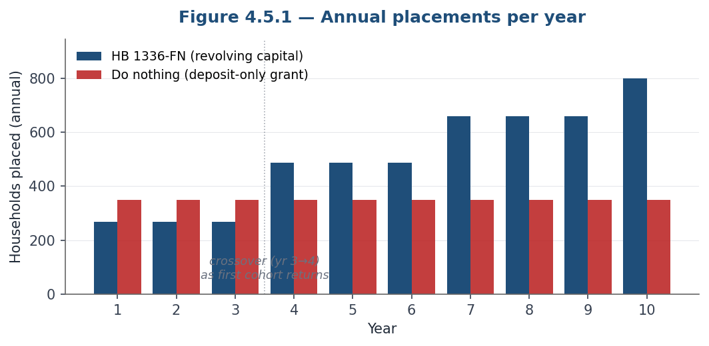
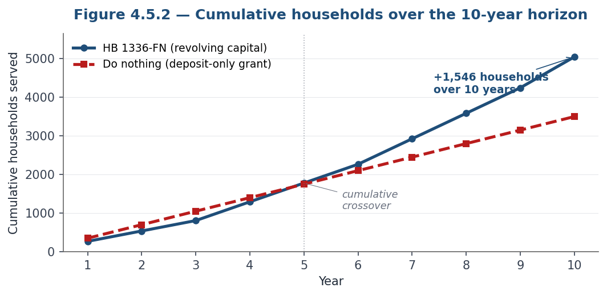

Executive Summary
HB 1336-FN creates a new financial instrument called a Regulated Conditional Deposit (RCD) that may be used as a compensating factor by rental applicants who may otherwise face denial of housing. An RCD is essentially an enhanced security deposit up to one additional month’s rent, available only when a rental applicant fails one of five enumerated statutory conditions that were disclosed prior to, or concurrently with, the submission of the rental application and payment of any application fees. The bill preserves the existing one-month security-deposit cap as the default rule for all qualified applicants. It does not compel any landlord to accept an RCD or to approve any applicant. It does not appropriate state money or impose any new obligation on municipal welfare.
The bill solves a narrow but real housing-access problem. Under current New Hampshire law, professional landlords often must deny applicants who are close to qualifying because fair-housing compliance requires consistent screening, while the state’s one-month deposit cap prevents enhanced security deposits, which are one of the housing industry’s most common alternate approval mechanisms. Enhanced deposits are already legal for owner-occupants of small multifamily properties and certain single-family rentals, but those arrangements operate with no disclosure rule, no statutory notice, no re-screening right, no third-party-payor refund mechanism, and no Consumer Protection Act enforcement linkage. HB 1336-FN extends this existing practice to the professional landlord segment with substantial new guardrails.
The five eligible conditions are: (a) credit score, with the landlord’s minimum capped at 650; (b) income, with a two-prong restriction requiring the applicant’s household income to exceed 350% of federal poverty guidelines for a household of two and the landlord’s income requirement to be no more restrictive than 3× rent; (c) prior eviction proceedings resulting in judgment, with no-fault carve-outs; (d) outstanding unpaid judgments within seven years, excludable with payment-plan compliance; and (e) unverifiable present and most recent prior landlord references.
Key safeguards include: mandatory pre-application disclosure of approval criteria; a statutory notice safe harbor identifying the specific failed criterion; a re-screening right (every six months for credit, income, eviction, and judgment criteria; after twelve months for references) with refund or rent credit within thirty days; express Consumer Protection Act enforcement under RSA 358-A with statutory damages and attorneys’ fees; an anti-circumvention rule barring RCD use when the landlord’s criteria are stricter than the statutory caps; and installment-payment authorization.
The bill also legalizes deposit refunds to third-party payors — families, employers, charities, municipalities, faith communities — so that deposit assistance can be recycled rather than permanently consumed. This converts existing one-way grant programs into revolving funds, substantially increasing the capacity of every charitable dollar deployed against the deposit problem. The Senate amendment ensures that any municipal welfare funds advanced as security deposits are returned directly to the municipality.
The bill passed the House (OTP/A, March 11, 2026), the Senate (14–9, May 14, 2026), and House concurrence (180–162, May 21, 2026). It is publicly supported by the New Hampshire Residential Property Owners Association and the Apartment Association of New Hampshire. New Hampshire Legal Assistance moved from opposition on the introduced bill to neutral on the amended bill. The only remaining steps are enrollment and presentation to the Governor for signature. The author respectfully recommends that the Governor sign HB 1336-FN into law.
1. The Bill’s Policy Architecture
HB 1336-FN amends RSA 540-A by inserting a new subdivision titled “Regulated Conditional Deposits” at RSA 540-A:9, and by making conforming amendments elsewhere in the statute. The architecture has seven moving parts.
1.1 Definition of the instrument
A new RSA 540-A:5, V defines a “Regulated Conditional Deposit” (RCD) as an amount accepted by a landlord pursuant to RSA 540-A:9, up to an additional one month’s rent in excess of the limit in RSA 540-A:6, I(a). The RCD is not a separate kind of money; it is treated as part of the security deposit for purposes of RSA 540-A:6 through RSA 540-A:8, except where specifically modified.
1.2 Eligibility — five enumerated statutory conditions
Under RSA 540-A:9, II, an applicant may offer, and a landlord may accept or suggest, an RCD only when the applicant fails the landlord’s approval criteria, the unmet criteria were disclosed prior to, or concurrently with, the submission of the rental application and payment of any application fees, and at least one of the following five conditions is true:
(a) Credit score, capped at 650. The landlord’s minimum credit score requirement must be no more than 650. A landlord whose minimum is higher than that cannot use the RCD on credit grounds.
(b) Income, two-prong restriction. The applicant’s combined verifiable household gross income from lawful sources exceeds 350 percent of the federal poverty guidelines for a household of two, and the landlord’s minimum income requirement is no more restrictive than 3× the monthly rent.
(c) Prior eviction proceedings, judgment required. Excludes cases dismissed without judgment, and excludes cases where the applicant provides a verifiable court decision that the basis was lead abatement (RSA 540:2, II(f)), lease expiration (RSA 540:2, II(i)), or “other good cause” under RSA 540:2, II(e) where the cause was the landlord’s intent to renovate, remove from the rental market, sell absent tenants, lease to relatives, the applicant’s refusal to agree to a rent increase, or other reasons clearly not due to the applicant’s fault.
(d) Outstanding unpaid judgments within seven years. Excluded entirely when the applicant verifiably demonstrates compliance with a payment plan for the earlier of twelve months or until the judgment is paid in full.
(e) Missing landlord references. The prospective landlord was unable to verify the present landlord reference and the most recent prior landlord reference.
1.3 Bilateral Optionality and the Anti-Circumvention Rule
RSA 540-A:9, III is explicit: the bill compels nothing. A landlord cannot be required to accept an RCD; cannot be required to approve a failed applicant; and — critically — cannot accept an RCD on the basis of an approval criterion more restrictive than what the statute permits. If a landlord’s criterion is more restrictive than the statutory cap, the one-month limit governs that ground unless another qualifying condition in RSA 540-A:9, II independently applies. The provision is best understood as an anti-circumvention rule: a landlord cannot use a stricter-than-statute criterion as a manufactured basis to demand an enhanced deposit.
Optionality runs in both directions. A tenant who would prefer a different lawful compensating factor — a qualified co-signer, a surety bond, prepaid rent — may negotiate for that alternative, and the parties may agree to it if mutually attractive. In many circumstances, a qualified co-signer or bond is in fact more protective of the landlord than an RCD; a landlord with the option to take either may rationally prefer the former if offered. The goal of the architecture is to widen the set of mutually agreeable arrangements between landlords and marginal applicants permitted under state law, not to predetermine which tools are appropriate for any given circumstance.
1.4 Application-Criteria Disclosure and Statutory Notice Safe Harbor
Before accepting an RCD, a landlord must provide written notice specifying the reasons, informing the applicant of their re-screening right, and disclosing any re-screening fee (RSA 540-A:9, IV). RSA 540-A:9, V contains a statutory notice safe harbor, in at least 12-point type, with check-boxes for each of the five enumerated statutory conditions; using the prescribed notice language satisfies the notice requirements of RSA 540-A:9, IV. The intent of this provision is multifold: It promotes transparency in screening, which saves both parties time and money by allowing fit assessments to take place before investing time and money in the application process. It also preempts post hoc rationalizations for an RCD, and creates a clear evidentiary record for any consumer protection dispute that may arise from misuse of the RCD.
1.5 Re-screening and refund mechanism
A tenant who has provided an RCD and who has not been in material breach of the lease may submit a written request for re-screening at the tenant’s own expense, once every six months for criteria (a)–(d) and once every twelve months for the references criterion (e). If the tenant establishes that they meet the landlord’s standard rental criteria, the landlord must, within thirty days of the complete submission, either refund the RCD or apply it to future rent (RSA 540-A:9, VI). This is the bill’s structural off-ramp: the RCD is recoverable and subject to a statutory off-ramp, not a permanent surcharge.
1.6 Installment payment
RSA 540-A:9, I expressly authorizes landlords to accept payment of an RCD in installments. This allows the upfront cash burden to be reduced where the landlord agrees to an installment structure, accommodating tenants who can demonstrate cash flow but not large lump-sum liquidity. The installment authorization can also accommodate “layaway”-style arrangements in which a prospective applicant is conditionally pre-approved while holding a priority position on a rental waitlist. Layaway models could be especially pragmatic because a sequence in which the delivery of the risk instrument precedes delivery of possession resolves provider hesitation around allowing the risk conditions to commence without full receipt of the security instrument. Moreover, the timely performance of an RCD installment plan prior to transfer of possession is also a useful heuristic for whether the accommodation was warranted in the first place.
1.7 Consumer Protection Act enforcement
RSA 540-A:8, I(c), as refined by the bill, provides that noncompliance with RSA 540-A:9 is deemed a violation of RSA 358-A:2 and is subject to the remedies in RSA 358-A:10, I, including recovery of actual damages or $1,000, whichever is greater; for willful or knowing violations, two to three times that amount; plus costs and reasonable attorneys’ fees. Misuse of an RCD has stronger, more specifically targeted consumer-protection enforcement than any other compensating-factor instrument currently legal in New Hampshire.
2. The Problem HB 1336-FN Solves
HB 1336-FN solves a narrow but real housing-access problem: under current New Hampshire law, professional landlords often must deny applicants who are close to qualified because fair-housing compliance requires consistent screening, while the state’s one-month deposit cap prevents one of the housing industry’s most common alternate approval pathways — enhanced security deposits. The bill creates a new financial instrument, the Regulated Conditional Deposit (RCD), which provides a capped, refundable, regulated path to approval for applicants who may otherwise be denied. RCDs are less regressive than other available compensating factors and are secured by stronger consumer protections than alternatives already legal in portions of the market.
2.1 Who the Bill Is For — and Who It Is Not
HB 1336-FN was designed for the marginal renter — the applicant on the cusp of qualifying under standard industry screening, but who falls just short on one of a small number of well-defined criteria. It was not designed as a panacea for the struggles of the most disadvantaged households, although its design does conceivably help all renters. Great care has been taken throughout the drafting process not to harm some households while expanding opportunity for others.
The distinction in target demographic has been the source of some misunderstanding in the opposition record. Several critics have evaluated the bill against the question “Will this fix the housing access problem for everyone?” That is the wrong question. The right question is “Does this make housing access measurably better for a meaningfully large group of working New Hampshire renters, without making things worse for anyone else?” On that question, the answer is yes. The bill’s eligibility gates are explicitly drawn to phase out at lower incomes (the 350% federal poverty floor for a household of two is a deliberate concession that protects the lowest-income segment from overextension), and the bill avoids creating new pathways by which a less-advantaged applicant could be made worse off than they are today.
The target population is best described as the working renter who is one credit setback, one thin file, one career change, one return-from-homeownership, or one missing reference away from approval. These are not catastrophically unqualified applicants. They are, by current screening criteria, categorically unqualified, but they are not inherently bad tenants. The bill creates a regulated, refundable, narrowly-bounded pathway to approval that today simply does not exist within the four corners of state law.
2.2 The Fair Housing Constraint
Every professional residential landlord operating at scale in New Hampshire faces the same recurring decision: a rental applicant arrives whose file is close to qualifying but not quite there. The landlord cannot lawfully resolve that close case by accepting a higher deposit. The landlord also cannot lawfully resolve the close case by making case-by-case exceptions to disclosed approval criteria — doing so on an ad hoc basis exposes the landlord to disparate-treatment liability under federal and state fair housing law. This Fair Housing constraint is one of the primary structural reasons for which marginal applicants are routinely denied today. A landlord that approves Applicant A under non-public discretion must be prepared to defend that decision against a fair housing complaint from Applicant B with a similar file but different protected-class characteristics.
This is one of the foundational policy drivers behind HB 1336-FN. The bill’s central function is to give the landlord a structured, statutorily defined, consistently applicable compensating-factor instrument that can be used uniformly across the applicant pool. The instrument exists in statute. Its eligibility criteria are enumerated. Its disclosures are standardized. Its use is documented. A landlord that uses the RCD lawfully and consistently is in a far stronger fair-housing posture than a landlord relying on ad hoc discretion.
2.3 The Marginal Applicant Profile
The applicants this bill addresses share a general profile, though the specific shortfall varies. The shortfall may be poor or thin credit; income that falls short of general industry requirements; a history of evictions or unpaid judgments; or a lack of verifiable rental history. Under the fair housing constraints identified above, the compliance-safe response in many of these cases is denial.
There are, however, several lawful workarounds. A creditworthy co-signer is one. A surety bond (aka “corporate guarantor”) is another. Multiple months of prepaid rent under RSA 540-A:6, I(a) is a third. Each is a reasonable, fair-housing-compliant alternative approval pathway -- because each has direct nexus with the specific risks for which the landlord seeks mitigation – but each is structurally less accessible to the marginal applicant than a refundable, regulated deposit would be. Co-signer requirements depend on social capital the applicant may not have (e.g. familial ties in the upper middle or upper classes). Surety bonds are insurance products with non-refundable premiums that price against weaker credit. Prepaid rent is a liquidity test that requires three to twelve months of rent, plus security deposit, in cash before move-in.
The result is a population of marginal applicants — the legislative record refers to them as the “cusp” applicants — who are categorically unqualified under standardized screening criteria but who may not be catastrophically unreliable as a tenant. They are the working renter rebuilding credit after a setback; the first-time renter with no verifiable references; the recent graduate; the older adult reentering the rental market after a long stretch as a homeowner. In a tight New Hampshire rental market, with persistently low vacancy and rising rents, these applicants are increasingly squeezed.
2.4 The Bill’s Solution at a Glance
HB 1336-FN was drafted to solve this specific problem with a specific tool. It does not attempt to address every dimension of the housing crisis. It does not increase housing supply. It does not appropriate state money. It does not change tenant protections under the eviction statute, the Consumer Protection Act, or RSA 540-A. Instead, it fills a defined gap in New Hampshire’s screening law: it gives a regulated, refundable, statutorily protected way for an applicant and landlord to bridge a marginal screening failure that falls within one of the bill’s enumerated statutory conditions, in cases where current law leaves only denial or a more burdensome workaround.
The remainder of this analysis sets out the policy architecture (Section 1), the problem the bill solves and the population it targets (Section 2), the relationship to existing law (Section 3), the third-party-payor refund mechanism (Section 4), the safeguards and incentive structure (Section 5), practical examples (Section 6), the underlying logic of rental risk (Section 7), the legislative and stakeholder history (Section 8), and the principal objections raised during the legislative process (Section 9). The central proposition is straightforward: most objections to HB 1336-FN are understandable at first glance, but the final amended bill addresses them through narrow eligibility rules, mandatory disclosure, refund rights, third-party-payor safeguards, alignment of structural incentives, and Consumer Protection Act enforcement.
3. Existing Law and Current Lawful Compensating Factors
A point that is often missed in surface-level discussion of HB 1336-FN is that New Hampshire law already permits substantial advance-rent arrangements — and does so with fewer protections than the bill provides. The same is true of the existing statutory carve-outs: enhanced security deposits are, today, lawfully collected by owner-occupants of small multifamily properties and by operators of certain single-family rentals, without any of the disclosure, refund, re-screening, or CPA enforcement features built into HB 1336-FN. The bill expands an existing legal practice to the professional landlord segment while simultaneously imposing meaningful guardrails on its use.
Subsections 3.1–3.4 expand the document’s Section 3 for this web edition, gathering in one place the treatment of each compensating factor that is lawful under current law.
3.1 Prepaid rent: the advance-rent pathway
RSA 540-A:6, I(a), in its existing form, contains a clause that follows the one-month cap immediately:
“Nothing in this section shall prohibit a landlord from entering into a written lease that requires the quarterly or less frequent payment of rent; provided, however, that the security deposit received in addition to the initial rent payment may not exceed the equivalent of one month’s rent.”
On its face, that sentence authorizes leases that require quarterly, semi-annual, or annual rent payments. In practice — as confirmed in the public legislative record — landlords use this clause to require three, six, or in some cases twelve months of rent paid in advance from applicants who cannot pass standard screening but have unusual liquidity. Existing law allows substantial advance-rent arrangements without a one-month dollar cap, so long as the payments are applied to uninterrupted, consecutive rental periods beginning – implicitly -- with the first unpaid rental period (a clarification made explicit by the House amendment to RSA 540-A:5, II). And it is available without any of the protections built into HB 1336-FN.
What may a landlord lawfully collect at signing today?
Illustrated for a $1,500/month unit on a 12-month lease, under current law (before HB 1336-FN). = rent paid at signing; = month not yet due; = the one-month security deposit.
| Arrangement | Lawful today? | Cash at signing | Why |
|---|---|---|---|
| First month + one-month security | Lawful | $3,000 | The standard arrangement under RSA 540-A:6, I(a). |
| First month + last month + security | Unlawful | $4,500 | “Last month” is held against a future, non-consecutive period — funds in excess of the monthly rent, i.e., a security deposit above the cap. |
| First two months + security | Unlawful | $4,500 | On a monthly lease, a second month up front is advance rent on a schedule more frequent than quarterly — outside the advance-rent clause. |
| First month + a double security deposit | Unlawful | $4,500 | The deposit cap is one month for every statutory “landlord” (see Section 3.4 for who is exempt). |
| Quarterly lease: first 3 months + security | Lawful | $6,000 | Leases requiring “quarterly or less frequent” payment of rent are expressly permitted. |
| Semi-annual lease: first 6 months + security | Lawful | $10,500 | Less frequent than quarterly. |
| Annual lease: all 12 months + security | Lawful | $19,500 | Less frequent than quarterly. |
| Any number of months + security + | Lawful | No statutory ceiling | Advance rent is not a security deposit and carries no dollar cap, provided payments apply to uninterrupted, consecutive periods beginning with the first unpaid (RSA 540-A:5, II). |
3.2 Co-signers and surety bonds: the rest of today’s toolkit
Prepaid rent is only one of the compensating factors lawfully available today. The other two — the qualified co-signer and the rental surety bond — are unchanged by HB 1336-FN, and each remains the right tool in the right circumstance. The bill’s case has never been that these tools are defective; it is that each is structurally inaccessible to a meaningful share of the marginal-applicant pool.
The qualified co-signer. A creditworthy guarantor assumes liability for the full lease obligation. Co-signers are foundational to industry practice, and in many circumstances are more protective of the landlord than an RCD: the guarantor stands behind every dollar of the tenancy, not a single month held in trust. The limitation is access. A co-signer requires social capital — the applicant must know someone with strong credit who is willing to expose their own finances, an asset that correlates with family wealth rather than with the applicant’s own reliability (Section 2.3).
The rental surety bond. Sometimes marketed as a “corporate guarantor,” the surety bond is an insurance product: the applicant pays a premium, typically priced against weaker credit, and the insurer guarantees a portion of the landlord’s loss. The premium is non-refundable — a tenant who performs flawlessly never sees that money again. Bonds retain a place in the toolkit where a single additional month of security is insufficient to liquidate the risk of a specific application (Section 9.11); as a routine compensating factor, however, they convert a recoverable obligation into a consumed cost.
The RCD was designed against precisely these gaps: refundable where the bond premium is consumed; fundable by the applicant’s community where the co-signer demands social capital; and capped at one additional month where prepaid rent demands many.
3.3 Instrument by instrument: how the RCD compares
A direct comparison across all four instruments is useful:
| Feature | Qualified co-signer | Rental surety bond | Prepaid rent (existing law) | Regulated Conditional Deposit (HB 1336-FN) |
|---|---|---|---|---|
| What the applicant must produce | A creditworthy guarantor willing to assume liability | Cash for a non-refundable premium | Typically 3–12 months of rent in cash | Up to one additional month of rent — installments permitted where the landlord agrees; third parties may fund |
| Is the cost recovered? | No cash outlay, but the guarantor carries open-ended exposure for the tenancy | No — the premium is consumed | Applied against rent — recoverable only by continued occupancy through the prepaid period | Yes — refundable or creditable within 30 days after a complete re-screening submission if the tenant is not in material breach and establishes the standard criteria; otherwise refundable on move-out under the ordinary security-deposit framework |
| Who can supply it | Family or a social network with strong credit | An insurer, priced against the applicant’s risk | The applicant’s own liquidity | The applicant, family, an employer, a charity, or a municipality — the refund returns to the payor (RSA 540-A:7, I(b)) |
| Statutory cap on amount | None | None (premium varies) | No one-month dollar cap (but advance rent must be applied to consecutive, uninterrupted rental periods beginning with the first unpaid period — RSA 540-A:5, II) | One additional month’s rent (RSA 540-A:5, V) |
| Eligibility limits | None | None — insurer underwriting applies | None | Five enumerated, statutorily-capped criteria (RSA 540-A:9, II) |
| Disclosure of criteria required prior to or concurrently with application | No | No | No | Yes (RSA 540-A:9, II) |
| Statutory notice safe harbor | No | No | No | Yes (RSA 540-A:9, V) |
| Re-screening / refund right | No | No | No | Yes; 6-month / 12-month cycles; 30-day refund deadline (RSA 540-A:9, VI) |
| Third-party payor refund mechanism | No | No | No | Yes (RSA 540-A:7, I(b)) |
| Consumer-protection regime | General contract law | Insurance regulation | Advance-rent rules (RSA 540-A:5, II) | Disclosure, statutory notice, re-screening, refund deadlines (RSA 540-A:9) |
| CPA enforcement against misuse | No — contract remedies only | No — insurance-regulatory remedies | Subject to general RSA 540-A enforcement | Express RSA 358-A:2 / RSA 358-A:10, I link (RSA 540-A:8, I(c)) |
| Anti-circumvention rule (stricter criteria disqualify) | Not applicable | Not applicable | No | Yes (RSA 540-A:9, III(c)) |
The implication is significant. HB 1336-FN does not introduce a more burdensome instrument into New Hampshire law. It introduces a less burdensome, more protective one — and it does so for the very segment of the applicant pool that needs it most HB 1336-FN gives the landlord, and the marginal applicant they want to approve, the tool that current law denies them — a tool that is common practice elsewhere and was, until now, simply unavailable to professional landlords in New Hampshire.
This comparison also responds to a recurring framing in the legislative record: that the bill represents a transfer of risk from landlords to tenants. The framing implicitly assumes that risk is currently borne by landlords. It is not, in the cases this bill addresses. Today, marginal applicants who cannot produce an acceptable compensating factor are denied; landlords avoid that risk by avoiding those applicants. HB 1336-FN does not move risk that landlords are absorbing onto tenants. It expands the set of applicants landlords can approve at all, at the cost of a refundable, regulated, recoverable deposit that is a fraction of the cost of the existing legal alternatives.
3.4 Enhanced deposits are already lawful — for exempt landlords
It is also worth noting that an enhanced security deposit, as a compensating-factor tool, is common industry practice across the country and is permitted without guardrails in many other states. HB 1336-FN is unusual among comparable statutes in the depth of its disclosure, re-screening, refund, third-party-payor, and CPA enforcement protections. The bill does not import a foreign instrument into New Hampshire law; it brings a familiar one inside an unusually protective regulatory perimeter.
The reason these enhanced-deposit arrangements are already lawful for part of the market sits in the definitions. RSA 540-A:5, I defines the “landlord” to whom the security-deposit subdivision — including the one-month cap — applies, and then expressly carves a class of owners out of it:
“A person who rents or leases a single-family residence and owns no other rental property or who rents or leases rental units in an owner-occupied building of 5 units or less shall not be considered a ‘landlord’ for the purposes of this subdivision, except for any individual unit in such building which is occupied by a person or persons 60 years of age or older.” — RSA 540-A:5, I
Because the cap in RSA 540-A:6, I(a) binds only a statutory “landlord,” these owners sit outside it entirely. An owner-occupant of a four-unit building, or the owner of a single rental house who owns no other rental property, may lawfully collect a double — or larger — security deposit today, with no disclosure requirement, no statutory notice, no re-screening right, no third-party-payor refund mechanism, and no RCD-specific Consumer Protection Act linkage. (The exception within the exception: units occupied by persons 60 years of age or older remain protected even within exempt buildings.)
This is the existing practice that HB 1336-FN extends — with guardrails — to the professional segment, and it is where the bill began: the author’s first lawful double deposit, accepted as an owner-occupant from an applicant emerging from homelessness, is recounted in Section 8.1. The bill takes a flexibility the statute already grants to the least-regulated corner of the market and offers it to professional landlords only inside an unusually protective regulatory perimeter (Section 1).
4. Third-Party Payor Architecture and Revolving Housing-Access Capital
One of the most consequential changes made to the bill during the legislative process was the addition of the third-party-payor refund mechanism in RSA 540-A:7, I(b), which addresses a long-standing limitation in New Hampshire’s security deposit framework.
4.1 The current-law problem
Under existing RSA 540-A, a landlord must return any refundable portion of a security deposit to the tenant. The statute does not permit return to a third party, even if that third party — a parent, an employer, a faith community, a charity, a municipality — paid the entire deposit. Practically, this means that every dollar of security deposit assistance disbursed by a New Hampshire deposit-assistance organization is a one-way grant. The dollar leaves the organization, sits in the landlord’s escrow account for the duration of the tenancy, and at the end of the tenancy is paid back to the tenant — not to the organization that originated the assistance. The organization’s capital does not recover; its capacity is permanently reduced by the amount of the disbursement.
In the public legislative record, multiple stakeholder organizations described both the demand for deposit assistance (New Hampshire 211 received over 1,000 deposit-assistance calls in 2025) and the capital constraints on the supply side (organizations exhausting annual funding within months of distribution; statewide reports of nineteen agencies meeting to coordinate around the binding constraint of insufficient deposit capital). The structural problem is not that New Hampshire lacks deposit-assistance organizations; it is that the existing legal framework forces those organizations to operate on a grant model when a revolving-fund model would be far more efficient.
The legislative record from the House Housing Committee hearings also indicated that New Hampshire previously operated a revolving loan fund for security deposits. The reasons for its discontinuation were not fully explored on the record, but a plausible factor is the difficulty of collecting repayment from tenants directly. The third-party-payor refund mechanism in HB 1336-FN avoids that administrability problem by making the landlord — a generally more sophisticated, contractually obligated counterparty — the trust agent and refund payor. Capital recovery does not depend on tenants writing checks back to charities; it depends on landlords following the refund framework they already follow under RSA 540-A.
4.2 What the amendment does
RSA 540-A:7, I(b), as added by the House amendment, permits a landlord to return the refundable portion of a deposit to a third-party payor in accordance with the third party’s written instructions, provided that those instructions were delivered to the tenant in writing or by electronic communication prior to the commencement of the tenancy. The bill establishes a deliberate sequencing rule for deductions from the security deposit: deductions for damages are taken first from tenant-paid funds and only second from third-party funds. That ordering preserves accountability for the tenant. If the tenant defaults or damages the property, the tenant bears the cost before any charitable, employer, or municipal contribution is touched. This is a careful and deliberate part of the incentive structure contemplated by the bill. It ensures that third-party support enhances, rather than insulates against, the tenant’s normal accountability under the lease. A landlord who, in good faith, apportions third-party funds in compliance with this section is discharged of liability for the apportionment.
The Senate amendment further provides that, unless otherwise directed by the municipality, any security deposit funds paid by a municipality under RSA 165 must be returned directly to the municipality, with a good-faith safe harbor for the landlord.
4.3 Reusable housing-access capital
The practical effect is to convert security deposit assistance from a one-way grant into a refundable, redeployable instrument. Every security deposit assistance organization in New Hampshire — faith-based housing funds, regional workforce-housing initiatives, local charities, employer-supported housing-access programs — now has the option to manage its capital as a revolving fund. Each charitable dollar can serve multiple households over time without requiring a new donation.
The scale of capacity unlocked by this change is meaningful. A deposit-assistance organization with $100,000 of capital under existing law can serve approximately fifty households on a typical one-month deposit (at roughly $2,000 per household). Under HB 1336-FN, the same $100,000 can be cycled — depending on average tenancy duration, deduction rates, and turnover — multiple times over the course of a decade. The organization’s functional capacity may rise by a multiple, without a single new donor commitment, without state appropriation, and without any change in the population it serves.
4.4 Who can be a third-party payor
The bill’s third-party-payor language is intentionally broad. The third party may be a family member, an employer, a charitable or religious organization, a workforce-housing program, a community-development financial institution, or a municipality. Where a municipality chooses to act as a third-party payor under RSA 165 — and it is worth emphasizing that RSA 165 expressly preserves municipal discretion over whether to fund security-deposit assistance at all (Elliott Berry testified during the House Housing Committee hearing that virtually none of the cities and towns in New Hampshire offer security-deposit assistance today) — the Senate-added safeguard provides that, unless the municipality directs otherwise, municipal security-deposit funds (less any lawful deductions and with any interest required by law) are returned directly to the municipality within thirty days after termination of the tenancy, with a good-faith safe harbor for the landlord.
This breadth matters: many applicants who need help qualifying do not personally have extra liquidity. The bill’s architecture allows a community — in whatever form that community appears in the applicant’s life — to stand behind the marginal applicant in a regulated, refundable, recyclable way. This responds directly to one of the most substantive critiques raised in the legislative record: that an applicant without personal liquidity cannot use a higher deposit. That critique is accurate as stated. The bill’s response is to widen the pool of people who can supply the liquidity rather than to deny that the limitation exists. Many applicants do have the means — whether savings, family help, or accumulated liquidity from a recent move — to fund an RCD themselves, and for those applicants self-funding remains the primary path to qualifying. The third-party-payor mechanism does not replace self-funding; it complements and extends it, broadening who can supply the liquidity when the applicant cannot do so alone, and moving more people into the population of renters who can produce the security an RCD requires. Under HB 1336-FN, the answer to “the applicant cannot fund the RCD” is not “then the applicant is denied”; it is “then a third party may fund it on the applicant’s behalf, with the refund flowing back to that third party.” The bill turns deposit assistance from a personal-liquidity test into a community-support mechanism.
4.5 Capital efficiency: enabling charitable deposit assistance to function as revolving working capital
A concern raised during the legislative process was that requiring some applicants to provide both a standard security deposit and an RCD would double the upfront cost per assisted household, and that this would halve the number of families a deposit-assistance charity could help. The concern is well-founded as stated; it rests, however, on an implicit assumption that every charity-assisted household would need both a deposit and an RCD. That assumption almost certainly overstates the demand. In practice, only a subset of charity-assisted applicants will additionally require an RCD, since many applicants need help only with the standard one-month deposit — a savings shortfall in an otherwise qualifying applicant. The exact proportion is not knowable in advance, but it is reasonable to expect it to be materially less than one hundred percent.
More important than the proportion is the structural response. The third-party-payor architecture in HB 1336-FN was developed in direct response to this feedback. Engaging with the concern surfaced what is, in fact, a structural distortion in existing New Hampshire law that affects deposit-assistance organizations generally, not only those that may also fund an RCD: a charity that pays a tenant’s security deposit watches that capital flow to the tenant at move-out under current law and never see it again, requiring entirely new fundraising for the next household. By contrast, RSA 540-A:7, I(b) — as added by HB 1336-FN — provides that where a security deposit (or an RCD) is funded by a third party, the refund at move-out may, where the charity and the tenant so agree, flow back to that third party rather than to the tenant. The mechanism is permissive, not mandatory: a charity that elects to operate a one-way grant program may continue to do so, and a tenant who wishes to receive the refund directly is free to negotiate that arrangement. The bill creates the legal pathway; whether a given charity chooses to manage its funds as revolving working capital is the charity’s decision to make.
For organizations that do choose to operate this way, the implications for capital efficiency are substantial. The natural mental model is the way an investor thinks about an internal rate of return. There is an initial outlay period — similar to an upfront capital investment — during which the program deploys donor capital to fund deposits (and an RCD, where applicable) without yet seeing any recovery. As tenancies conclude and refunds are processed, a substantial portion of each cohort’s deposits returns to the fund and is redeployed. That recovered capital functions as recurring “revenue” that replenishes previously deployed capital, just as a returning principal payment from a loan portfolio replenishes a revolving credit facility. The recovery is not perfect; some portion of each cohort’s deposits will be retained against lawful deductions or applied to defaults, and the model reflects this with an explicit recovery rate. But the recovered portion is meaningful, and over time it accumulates into a materially larger working pool than a one-way grant program could maintain on the same charitable inflow.
We estimate that, over a ten-year horizon at central assumptions, the incremental impact of HB 1336-FN’s third-party-payor architecture is on the order of an additional one thousand to fifteen hundred families per one million dollars of annual charitable inflow. The illustrative capital model accompanying this analysis specifies the comparison at a representative one million dollars in annual charitable inflow, a thirty percent overhead rate, and a two thousand dollar average standard deposit. Under current law, the charity funds a one-month security deposit for each assisted household; the deposit refunds to the tenant at move-out and does not return to the fund, so the program serves approximately 3,500 households over ten years. Under HB 1336-FN — assuming the charity opts into the revolving-capital model authorized by RSA 540-A:7, I(b) — the charity funds the same deposit and, where applicable, an RCD, both of which may flow back to the fund at move-out. Assuming thirty percent of assisted households require the bundled deposit-plus-RCD, an average tenancy of three years, and a population-weighted recovery rate of approximately eighty percent anchored to the TransUnion ResidentScore eviction data presented in Section 3, the same program serves approximately 5,046 households over ten years — an incremental impact of approximately 1,546 additional families on the same charitable inflow.
The trajectory is illustrated in the two figures below. Figure 4.5.1 shows annual placements per year under each scenario; Figure 4.5.2 shows cumulative households served over the full ten-year horizon.


The year-by-year output of the same scenario is summarized in the table below. Annual Δ is the difference in households placed in that year; Cumulative Δ is the running total difference at the end of each year. Following the convention used throughout this site, green deltas are favorable (HB 1336-FN ahead of the do-nothing baseline) and red deltas are unfavorable.
| Year | HB 1336 capital deployed | HB 1336 HH | HB 1336 cum. | Do nothing HH | Do nothing cum. | Annual Δ | Cum. Δ |
| 1 | $700,000 | 269 | 269 | 350 | 350 | −81 | −81 |
| 2 | $700,000 | 269 | 538 | 350 | 700 | −81 | −162 |
| 3 | $700,000 | 269 | 808 | 350 | 1,050 | −81 | −242 |
| 4 | $1,263,220 | 486 | 1,294 | 350 | 1,400 | +136 | −106 |
| 5 | $1,263,220 | 486 | 1,779 | 350 | 1,750 | +136 | +29 |
| 6 | $1,263,220 | 486 | 2,265 | 350 | 2,100 | +136 | +165 |
| 7 | $1,716,387 | 660 | 2,925 | 350 | 2,450 | +310 | +475 |
| 8 | $1,716,387 | 660 | 3,586 | 350 | 2,800 | +310 | +786 |
| 9 | $1,716,387 | 660 | 4,246 | 350 | 3,150 | +310 | +1,096 |
| 10 | $2,081,005 | 800 | 5,046 | 350 | 3,500 | +450 | +1,546 |
The shape of this trajectory has implications worth surfacing for the policy decision in front of the legislature. There is a candid short-term cost: in years one through approximately three, a revolving-capital program at the central assumptions serves slightly fewer households per year than a deposit-only grant program would, because the first cohort’s deposits have not yet returned for redeployment. This is the upfront-investment period that any return-on-investment framework recognizes — the temporary outlay before the recurring revenue stream from refunds begins to flow. Beginning at roughly year four, when the year-one cohort’s deposits return, the annual capacity of the revolving-capital program rises above the grant baseline; by year ten, annual placement capacity is approximately 2.3 times the grant baseline (approximately 800 versus 350 households per year, at the central assumptions). The model also tests the worst-case end of the range — high bundling combined with a depressed recovery rate — and finds that a revolving-capital program underperforms a deposit-only grant baseline only at simultaneously pessimistic assumptions on both levers. At any plausible combination of bundling rate and recovery rate, the ten-year incremental benefit is positive and material.
A final word on the enabling nature of the framework. HB 1336-FN does not require any charity to operate a revolving-capital program. The bill creates the legal infrastructure — RSA 540-A:7, I(b) — that makes revolving-capital management possible where it was not before. Whether any particular organization elects to take advantage of that infrastructure is a question for the organization’s board, its donors, and its operational judgment. What can be said is that without the passage of HB 1336-FN, this option is not available. With the passage of HB 1336-FN, the option becomes available to any charitable organization that chooses to operate this way, and the model above illustrates what that option is worth.
An interactive version of the underlying capital model, with editable assumptions, year-by-year output, sensitivity analysis across bundling rate and recovery rate, and a do-nothing comparison, is available alongside this analysis.
5. Safeguards and Incentive Alignment
HB 1336-FN’s consumer-protection architecture is, by deliberate design, denser than the existing statutory framework for either ordinary security deposits or prepaid rent. The following inventory walks through the safeguards reflected in the final amended bill text, organized by function.
5.1 The cap
RSA 540-A:5, V caps the RCD at one additional month’s rent above the existing one-month security deposit ceiling. There is no statutory pathway in the bill to a deposit larger than that. RSA 540-A:6, I(a) remains the default rule for any applicant who passes the landlord’s pre-disclosed criteria, or whose unmet criterion is not one of the five enumerated statutory conditions, or whose unmet criterion is one for which the landlord’s threshold is more restrictive than the statutory cap.
5.2 Application-Criteria Disclosure
Under RSA 540-A:9, II, the landlord’s approval criteria must be disclosed prior to, or concurrently with, the submission of the rental application and payment of any application fees. This eliminates post-hoc justification of an RCD: a landlord cannot claim, after an application is received, that the applicant failed an RCD-eligible criterion that the applicant had no way of knowing about.
5.3 Identification of specific failed criteria
Under new RSA 540-A:9, IV–V, before accepting an RCD a landlord must provide written notice specifying the reasons for requiring the RCD, informing the applicant of the re-screening right, and disclosing any re-screening fee. RSA 540-A:9, V provides a notice form that can be reproduced in at least 12-point type, with check-boxes for each of the five enumerated statutory conditions; use of the prescribed notice language is a safe harbor and satisfies the notice requirements of RSA 540-A:9, IV. The notice creates a written record of which specific condition was the basis for the RCD — which is essential for both the applicant’s ability to challenge misuse and for any future enforcement action.
5.4 Installment option
RSA 540-A:9, I expressly authorizes landlords to accept payment of an RCD in installments. Installments are permissive — the landlord must agree — but the express authorization allows landlords and applicants to structure installment plans without raising any question about whether the practice is lawful. For applicants with adequate cash flow but limited initial liquidity, installment payment may be permitted by the landlord to reduce the lump-sum burden. As noted in Section 1.6, this authorization can also support “layaway”-style arrangements that hold a priority position on a rental waitlist while the applicant completes funding.
5.5 Re-screening, refund right, and the screening-fee cap
RSA 540-A:9, VI provides a statutory right to re-screening — once every six months for criteria (a)–(d), and once every twelve months for the references criterion (e). A tenant who clears the landlord’s standard criteria on re-screening must receive a refund or rent credit of the RCD within thirty days.
The tenant pays for the re-screening, a meaningful but bounded cost, with the fee disclosed in advance per the notice form. The cost is bounded by RSA 540-A’s existing cap on screening fees, which prohibits the landlord from profiting on the screening service: the fee is limited to the landlord’s actual cost. That at-cost framing is important to discuss, because the fairness of asking the tenant to bear the re-screening cost has been raised as an objection. The answer, in summary, is that re-screening exists to verify the cure of a shortfall in the tenant’s own application file; the landlord is barred from profiting on the verification; and shifting that bounded, at-cost burden to the landlord would erode the incentive structure that makes the RCD pathway work in the first place. The objection is addressed in greater depth in Section 9; the cap itself, however, lives here in the safeguards inventory because it is the structural feature that prevents the re-screening obligation from being weaponized.
5.6 No-fault eviction carve-outs
Eviction-based RCD eligibility under RSA 540-A:9, II(c) excludes cases dismissed without judgment, and excludes a list of no-fault grounds cross-referenced to RSA 540:2, II: lead abatement, lease expiration, landlord renovation, removal from the rental market, sale absent tenants, lease to relatives, refusal of a rent increase during a prior tenancy, and other reasons clearly not the applicant’s fault. The carve-outs respond to an argument advanced by some stakeholders during the legislative process that a portion of applicants with eviction history were affected by structural housing-market dynamics rather than their own misconduct. The statute enumerates specific, objectively identifiable “no-fault” grounds — lease expiration, sale, renovation, and the like — so that eligibility turns on the documented reason for the prior case rather than on any general assumption about fault.
5.7 Bounded and curable unpaid-judgment eligibility
RSA 540-A:9, II(d) limits unpaid-judgment eligibility to judgments issued within seven years and excludes the criterion entirely when the applicant verifiably demonstrates compliance with a payment plan for the earlier of twelve months or until the judgment is paid in full. The criterion is narrow and curable.
5.8 Third-party payor architecture
RSA 540-A:7, I(b), discussed in Section 4, allows refunds to be directed to a third-party payor where the parties agree in writing before the tenancy. Deductions are taken first from tenant-paid funds and only second from third-party funds. The landlord has a good-faith safe harbor for compliant apportionment.
5.9 Preservation of the standard cap
Section 3 of the bill amends RSA 540-A:6, I(a) only to add the exception language, preserving the one-month maximum for any deposit other than an RCD. Section 3 also removes the obsolete "$100, whichever is greater" floor from existing law — a minor technical clean-up that does not affect the cap as applied to any modern rental.
5.10 Bilateral optionality
RSA 540-A:9, III is explicit. The bill cannot be used to compel a landlord to accept an RCD; cannot be used to compel a landlord to approve a failed applicant; and does not permit an RCD to be accepted on the basis of any approval criterion more restrictive than the statutory caps in RSA 540-A:9, II. The RCD is offered by the applicant (or third party) and accepted or suggested by the landlord. Neither side is forced into it. The optionality runs in both directions. Just as a landlord cannot be compelled to accept an RCD, an applicant cannot be compelled to fund one: a tenant who would prefer not to post an RCD remains free to decline it and to negotiate for an alternative compensating factor — a co-signer, additional references, or proof of income — that better fits their circumstances. The RCD adds a tool to the menu; it does not displace the options applicants already have.
The consumer-side optionality is reinforced by the bill’s disclosure and recovery architecture. An applicant offered an RCD retains the right to walk away, to seek a different lawful arrangement, or to apply to a landlord whose pre-disclosed criteria the applicant already meets. The application-criteria disclosure requirement in RSA 540-A:9, II ensures the applicant has the information needed to make that choice before incurring any application cost; the re-screening right in RSA 540-A:9, VI ensures that even an accepted RCD is recoverable on cure; and the Consumer Protection Act linkage in RSA 540-A:8, I(c) ensures that misuse is privately actionable with statutory damages and fee-shifting. Together, these features make the consumer’s option meaningful in practice rather than nominal.
5.11 CPA enforcement
RSA 540-A:8, I(c) provides that noncompliance with RSA 540-A:9 is deemed a violation of RSA 358-A:2 and is subject to the remedies in RSA 358-A:10, I. Those remedies include recovery of actual damages or $1,000, whichever is greater; for willful or knowing violations, two to three times that amount; plus costs and reasonable attorneys’ fees. Security deposits — including RCDs — were already subject to the Consumer Protection Act under RSA 540-A’s existing framework; the House amendment refined and made explicit the RCD-specific enforcement linkage to ensure that misuse carries a meaningful, applicant-accessible remedy.
5.12 Naming as safeguard
The instrument is statutorily named the “Regulated Conditional Deposit.” The name was chosen deliberately. “Regulated” signals an instrument subject to statutory rules and penalties. “Conditional” signals contingency and recoverability. “Deposit” implies that the funds are handled as security deposits, including being subject to the state’s trust accounting laws. The naming convention is itself a check against shorthand drift in market practice; sponsors, advocates, the press, landlord associations, and tenant advocates were asked in the legislative record to use the statutory term consistently, precisely to keep the legal distinction from the ordinary one-month security deposit visible to both sides of every lease.
5.13 Quarterly court reporting
RSA 540-A:9, VII directs the administrative office of the courts to report quarterly, for each circuit court, the number of writs of summons filed in possessory actions; the number of notices of default and notices of judgment issued in favor of the landlord, broken out by the grounds for eviction in RSA 540:2, II; and the number of writs of possession issued. This reporting requirement is a standalone transparency provision included in the bill at the request of stakeholder organizations interested in better court-data visibility. It operates independently of the RCD framework: it does not condition, qualify, or otherwise bear on the operation, use, or consumer-protection features specific to RCDs, and is not properly understood as a measure of HB 1336-FN’s effect on eviction outcomes.
5.14 Senate municipal welfare safeguard
The Senate Commerce Committee’s amendment to RSA 540-A:7, I(b) ensures that any security deposit funds paid by a municipality under RSA 165 are returned directly to the municipality at the end of the tenancy, unless the municipality directs otherwise, with a good-faith safe harbor for the landlord. The amendment was added in direct response to concerns raised publicly by the New Hampshire Local Welfare Administrators Association.
5.15 Structural limits on the applicant pool
The income gate excludes applicants below approximately $75,000 in household income for a household of two; the credit gate excludes use of an RCD on credit grounds where the landlord’s minimum exceeds 650; and the income/rent math shows that income-based RCDs are mathematically unavailable below approximately $2,104/month in rent, excluding materially all of the studio and one-bedroom segments of the New Hampshire market and most two-bedroom units.
The underlying arithmetic is reproduced here. New Hampshire’s framework caps a landlord’s income requirement at three times rent, and the bill’s income floor protects any applicant whose household income falls below 350% of the federal poverty level — for a two-person household, $75,740 in 2026. Because three times monthly rent must reach that floor before an income-based RCD can apply, the income criterion is mathematically unavailable below roughly $2,104 in monthly rent:
| Monthly rent | Annual income at three times rent | Reaches the $75,740 floor? | Income-based RCD available? |
| $1,500 | $54,000 | No | No — protected |
| $1,800 | $64,800 | No | No — protected |
| $2,104 | $75,744 | At the floor | Threshold |
| $2,500 | $90,000 | Yes | Yes |
| $3,000 | $108,000 | Yes | Yes |
The threshold rent of roughly $2,104 sits at or above the typical studio and one-bedroom rent across most of New Hampshire and above many two-bedroom units. The income criterion therefore reaches only higher-rent units and leaves the lower-cost segments — where the most cost-sensitive applicants concentrate — outside its scope. The county-by-county FY2026 HUD Fair Market Rent schedule for New Hampshire is reproduced in Appendix A.
A well-designed regulatory instrument is one that aligns the incentives facing each party with the policy outcome the statute is trying to achieve. HB 1336-FN does this carefully on five sides: applicants, landlords, third-party payors, the state and the public, and — importantly — would-be bad actors, for whom the bill builds structural friction against abuse.
5.16 Applicants
Gain an additional path to approval where current law would otherwise force denial or a more burdensome workaround.
Receive greater transparency: disclosure of criteria prior to or concurrently with application and payment of any application fees, written specification of the criterion failed, advance disclosure of any re-screening fee.
May be supported by a third-party payor — family, employer, charity, municipality, faith community, workforce-housing program — without that party losing the option of recovering the funds.
May qualify for early refund or rent-credit through statutory re-screening if circumstances improve. The re-screening pathway gives the tenant a direct, tangible incentive to follow through on credit-repair, payment-plan, or financial-stability efforts: doing so releases a full month of rental liquidity back to the household. The RCD is, in this sense, an incentive instrument as well as a security instrument.
Are better off than they would be under denial, which is the realistic counterfactual for this applicant pool.
5.17 Landlords
Gain a lawful tool to approve marginal applicants they would otherwise deny.
Can tie additional security to a specific, statutorily defined underwriting risk rather than relying on case-by-case discretion that increases fair housing exposure.
Retain full discretion: cannot be compelled to accept an RCD, to approve any applicant, or to modify standard screening criteria.
Have no incentive to burden standard qualified applicants — landlords who tighten criteria past the statutory caps disqualify themselves from accepting an RCD on that basis, shrinking their applicant pool on that criterion without gaining the tool there. Conversely, landlords whose current criteria are more relaxed than the statutory caps have no countervailing reason to tighten them in response to the bill, because doing so would shrink their accessible renter pool relative to what is working for them today.
Face strong Consumer Protection Act exposure for misuse. The incentive structure is designed to be asymmetric: the upside of compliant use is access to a single additional month of refundable, regulated deposit; the downside of misuse is statutory damages, court costs, and attorneys’ fees.
For owners of commercial multifamily — where unit valuation is driven by net operating income at a capitalization rate that produces a 10× to 20× multiplier on each dollar of net operating income — vacancy cost discipline is substantially stronger than per-month rent loss suggests. A unit sitting vacant at $2,000/month represents not just the periodic loss of cash flow, but also adversely impacts income based valuations on the order of $20,000 to $40,000. This is a persistent disincentive against tightening criteria in pursuit of larger deposits, and a complementary incentive to extend flexibility to applicants who could be good tenants but who do not check every box.
5.18 Third-party payors
Can help without making a permanent grant. Charitable, family, employer, or municipal capital can be deployed against deposit needs and recovered on the other side of the tenancy.
Can target assistance to applicants who are close to qualifying — exactly the population where structured risk-mitigation is most effective.
Can support specific populations as those organizations choose: workforce housing, applicants reentering after incarceration, survivors of domestic violence, students, young workers, families exiting homelessness.
Operate within a regulated framework with statutory damage protections and written disclosure obligations.
5.19 The state and the public
Mobilizes private and charitable capital without a new state appropriation.
Complements existing public subsidy rather than replacing it. Municipalities, deposit-assistance organizations, and workforce-housing initiatives continue to operate; the bill expands their effectiveness.
May encourage greater market participation by allowing prospective housing providers to better manage the risks associated with offering their property for rent.
Creates a quarterly court-reporting requirement (RSA 540-A:9, VII) covering possessory actions and their grounds.
Protects municipal welfare programs via the Senate amendment.
5.20 Disincentives for Abuse
Several senators expressed concern in the legislative record that a landlord could put lackluster effort into verifying landlord references in order to manufacture eligibility under RSA 540-A:9, II(e) and collect an RCD. The bill addresses that concern through a layered set of structural disincentives that, in combination, make abuse impractical for any but the most marginal of bad actors — and even then, observable, enforceable, and ultimately self-defeating.
Observability on both sides. Reference-verification activity is highly observable. An applicant can ask whether a reference was contacted and whether a response was received. Landlord references in particular are routine, contemporaneous, and verifiable: the present landlord typically responds in writing or by telephone, with a record. False claims regarding reference unavailability are generally disprovable in a CPA action.
Cost without corresponding benefit. An RCD is refundable. A landlord who collects an additional month of deposit on a manufactured basis must, after twelve months of compliant tenancy, refund a full month of rent equivalent. The landlord has not earned anything; they have simply taken on the administrative work of accepting, holding, accounting for, and ultimately returning the funds. The economics of bad-faith reference manipulation are unattractive on their own terms.
CPA exposure. Any landlord who collects an RCD on a manufactured basis is exposed to RSA 540-A:8, I(c) and the remedies of RSA 358-A:10, I — actual damages or $1,000, whichever is greater; for willful or knowing violations, two to three times that amount; plus costs and reasonable attorneys’ fees. Statutory damages and fee-shifting create a real, applicant-accessible enforcement deterrent.
Reputational damage. Professional landlords operate in markets with reputational signals — tenant reviews, regulatory complaints, broker referral relationships, trade-association membership. A pattern of bad-faith RCD use is, in practice, visible to a non-trivial fraction of those signal channels.
Procedural friction selects for sophisticated actors. The bill intentionally entails a certain amount of process friction — pre-application disclosure, standardized notice, periodic re-screening, written third-party-payor instructions, sequenced deductions, refund deadlines. That friction selects for housing providers who are sophisticated enough to respect the consumer protections and who are making a good-faith effort to expand housing access at the margins. The tool is impractical, in design, for non-professional landlords; it is also impractical, in design, for bad-faith landlords whose business model cannot absorb the administrative and compliance load.
Taken together, these disincentives represent a deliberate alignment of the bill’s structural friction with its policy intent. The RCD is designed to be useful to the landlord-applicant pair who are genuinely trying to find a path to approval; it is designed to be unattractive, costly, or affirmatively dangerous to a bad-faith landlord trying to extract additional money from qualified applicants.
6. Practical Examples
The following examples illustrate how HB 1336-FN could operate in practice. They are illustrative rather than binding, and should be checked against the final enrolled bill text. All applicant names are placeholders.
6.1 Applicant with slightly low credit but strong income
“Alex” applies for a $1,950/month one-bedroom in Manchester. The landlord’s pre-disclosed criteria include a 640 credit score minimum and a 3× rent income requirement. Alex’s credit score is 615 — below the landlord’s minimum, and below the statutory 650 cap. Alex’s verifiable household income is $76,000, above 350% of FPL-2, and above 3× the rent ($5,850/month vs. $6,333 actual). Alex is otherwise qualified.
Under existing law, a landlord applying those criteria consistently would generally deny Alex on credit grounds, require a lawful workaround such as prepaid rent or a surety bond, or seek another consistently applied compensating factor. Under HB 1336-FN, Alex may offer an RCD of up to $1,950 (one additional month’s rent), payable in installments if the landlord agrees. The landlord provides the statutory notice safe harbor language, identifying credit as the failed criterion, and discloses any re-screening fee. Six months later, with timely rent payments and an improved credit profile, Alex may request re-screening; if Alex’s score has reached the landlord’s threshold, the RCD is refunded or credited within thirty days.
6.2 Applicant with thin credit file (first-time renter)
“Brianna” is a recent graduate applying for a $1,750/month one-bedroom in Portsmouth. She has a verifiable lawful job offer of $58,000/year and a parent willing to help with deposits. Brianna’s credit file is thin — too short for a reliable score — and she has no prior landlord references.
Under existing law, the landlord typically denies Brianna on the thin-credit and no-references grounds, or asks for a co-signer. Under HB 1336-FN, Brianna and the landlord may agree to an RCD on the missing-references criterion (RSA 540-A:9, II(e)). Brianna’s parent funds the RCD as a third-party payor (RSA 540-A:7, I(b)); the parties agree in writing before the tenancy that the refund flows back to the parent. Twelve months later, Brianna requests re-screening on the references basis; with twelve months of timely payment to her current landlord, the present-landlord reference she lacked at application now exists. If Brianna has, in the interim, also established a credit profile that meets the landlord’s standard, she clears both eligible criteria and the RCD is refunded to her parent. If, however, Brianna has not yet established a credit score that meets the landlord’s threshold, the landlord may continue to require an RCD on the credit basis until that criterion is also cured; the re-screening cycle for credit is six months under RSA 540-A:9, VI.
6.3 Applicant with income slightly below the standard ratio
“Carlos” applies for a $2,200/month two-bedroom in Concord. His verifiable household income is $79,000 — above 350% FPL-2 and above 3× the rent. The landlord’s minimum credit score is 660; Carlos’s credit is 670, so credit is not a basis. The landlord’s minimum income requirement is 3× rent ($6,600/month). Carlos’s income is $6,583/month — just below the threshold.
Under HB 1336-FN, Carlos may offer an RCD on the income criterion (RSA 540-A:9, II(b)), and the landlord may accept. Disclosure of the 3× rent threshold prior to, or concurrently with, application and payment of any application fee is required; the statutory notice safe harbor language identifies income as the failed criterion. Carlos may pay the RCD in installments if the landlord agrees. If Carlos’s income later rises above the landlord’s threshold and he requests re-screening, the RCD is refunded or credited within thirty days.
6.4 Applicant with limited rental history returning to the market
“Dana” sold her home eight years ago, moved in with family, and is now applying for a $1,650/month studio in Keene. She has no present landlord reference and no verifiable most-recent prior landlord reference. Her credit is strong, her income is comfortably above 3× rent, and she has no eviction or judgment history.
Under existing law, Dana is denied or asked for a substantial prepaid rent commitment. Under HB 1336-FN, the missing-references criterion permits an RCD. Dana funds the RCD herself. After twelve months of timely rent payment, the new landlord can serve as her de facto reference, and the RCD is refundable upon request.
6.5 Applicant assisted by an employer
“Eric” relocates to take a job at a New Hampshire-based manufacturer with a workforce-housing assistance program. The employer agrees to fund Eric’s RCD as a third-party payor under a recyclable model: the employer’s assistance pool funds RCDs for new hires, and refunds flow back to the pool after the new hires complete their re-screening or tenancy. Eric’s RCD is $1,800. He pays first month, his security deposit, and a small portion of the RCD; the employer funds the balance. At twelve months, Eric’s now-established rental history qualifies him for re-screening; the RCD refund returns to the employer’s pool, which is used to support the next new hire.
6.6 Applicant assisted by a nonprofit or church
“Catherine” is exiting transitional housing through a faith-based program with a small revolving deposit-assistance fund. Under existing law, the program’s capital is depleted with each grant — once the funds are disbursed, the program must wait until it raises new money before it can help the next family. Under HB 1336-FN, the program funds Catherine’s RCD as a third-party payor with a written instruction that the refund return to the program. If Catherine’s tenancy ends without significant deductions, the RCD is returned to the program’s fund, which can be redeployed to the next family in need.
6.7 Applicant assisted by a municipality
“Grace” applies for housing in a small town with an active local welfare program. The local welfare administrator determines that paying Grace’s standard one-month security deposit under RSA 165 is an appropriate use of municipal welfare funds. Grace also fails the landlord’s credit criterion (the landlord’s minimum is 640, Grace’s score is 600), and the landlord suggests an RCD. In this fact pattern, Grace funds the RCD personally with installments where the landlord agrees, and the municipality funds the standard one-month deposit under RSA 165. Under the Senate amendment, when the tenancy ends and the deposit is refundable, the standard deposit is returned directly to the municipality (less any lawful deductions and with any interest required by law); the RCD is returned to Grace. If a municipality instead funded all or part of the RCD under RSA 165, the Senate amendment would direct the refundable municipal portion of those funds back to the municipality unless the municipality directed otherwise. This example illustrates only one possible fact pattern; the bill does not restrict municipalities to funding only the standard deposit.
6.8 Applicant who later satisfies standard criteria and receives refund
“Henry” entered an RCD lease on credit grounds (his score was 605; the landlord’s minimum is 630). Twelve months in, with timely rent payment and credit-repair work, Henry’s score has reached 660. He requests re-screening at his own expense (the fee was disclosed in the original notice form and capped at the landlord’s actual cost under RSA 540-A’s screening-fee rule). The landlord verifies that Henry now meets the standard credit criterion. Within thirty days of the complete submission, the landlord either refunds the RCD or applies it to Henry’s future rent. Henry transitions to a standard one-month-deposit tenant for the remainder of the lease.
6.9 Applicant whose RCD was funded by multiple sources
“Imani” is supported by a combination of her own savings, her aunt, and a community deposit-assistance organization. Each source funds a portion of the RCD. Per the bill’s sequencing rule (RSA 540-A:7, I(b)), any move-out deductions are taken first from Imani’s tenant-paid funds, and only second from third-party-paid funds. If the tenancy ends with no deductions, the refund flows in proportion to the third parties’ written instructions: a portion to the aunt, a portion to the community organization, and the remainder to Imani.
7. The Allocation of Rental Risk
A central challenge in residential housing policy design is that rental risk cannot be legislated out of existence. The marginal risk that a particular applicant will not pay rent, will damage the unit beyond ordinary wear and tear, or will require an eviction action is a real cost that must end up somewhere. The policy question is not whether the risk exists; it is who absorbs it, how transparently, and at what cost.
There are only five places marginal rental risk can go. It can be:
Absorbed by the landlord — treated as a cost of doing business and priced into base rent for everyone. This is the default in jurisdictions that prohibit risk-mitigation tools, and it is regressive in practice because well-qualified applicants subsidize marginal risk through higher base rents.
Priced into the lease — via higher rent for the specific applicant. This is how risk pricing operates in many credit markets, including mortgage lending, but in the residential rental context individualized risk-based rent adjustments create consistency and fair-housing risk, particularly if applied ad hoc or in ways that correlate –knowingly or otherwise – with protected-class characteristics. Risk priced base rent also tends to lack the structural reversibility of a deposit.
Secured by a tenant-side instrument — a co-signer, a surety bond, a higher security deposit, or prepaid rent. This is the category HB 1336-FN operates in. The normative logic of this category is one of attribution: the marginal risk arises from the specific tenant’s file, and therefore the cost of mitigating that risk is borne by, or on behalf of, that tenant. New Hampshire has historically erred on the side of individualized responsibility for costs that arise from individual circumstance; a structured, refundable deposit fits that normative pattern.
Subsidized — via a deposit assistance organization, a municipal welfare program, a workforce-housing fund, or a charitable grant. New Hampshire has a thin and overstretched layer of this capital today, and HB 1336-FN has a mechanism (the third-party-payor refund architecture, discussed in Section 4) that meaningfully increases the productivity of that capital. The bill’s primary mechanism, however, is to enable private self-funding by applicants and their close communities.
Avoided — by denying the applicant. This is the default outcome when none of the other options is available, and it is the consequence of removing risk-mitigation tools from the screening toolkit.
Critically, removing risk-mitigation tools from the law does not make marginal applicants stronger. It does not improve their credit, raise their income, or change their rental history. These preemptions merely reduce the set of landlords who can take on their risk lawfully. In any reasonably competitive applicant pool, the predictable response is for those landlords to fall back on the simplest risk-management tool available to them under law: deny the marginal applicant and rent to a stronger one.
This is the empirical foundation for the bill. Marginal applicants are systematically denied today not because landlords are uniquely uncharitable, but because the existing legal toolkit does not give those landlords a structured, fair-housing-compliant way to take on marginal risk. HB 1336-FN provides a regulated way for preexisting risks to be allocated more transparently between the applicant (who internalizes the costs associated with their risks on a recoverable basis) and the landlord (who gains a defined buffer that has nexus and proportionality to the risks associated with the individual tenant).
The public testimony in support of the bill makes one further empirical observation that bears directly on the design. National credit-bureau data (TransUnion ResidentScore analyses across approximately 200 rental properties) consistently shows a sharp non-linearity in eviction risk by credit tier:
| ResidentScore Range | Empirical Eviction Rate |
| 350–449 | 12.3% |
| 450–499 | 9.4% |
| 500–549 | 5.8% |
| 550–649 | 1.3% |
| 650–749 | 0.3% |
| 750–850 | 0.2% |
Source: TransUnion ResidentScore eviction-rate analysis reflecting roughly 200 rental properties, drawn from TransUnion ResidentScore research publications and cited by the author in testimony before the New Hampshire House Committee on Housing, Public Hearing on HB 1336-FN (January 27, 2026), and incorporated by reference into the OTP testimony record.
Two features of this distribution drive the bill’s 650 credit cap. First, the eviction-risk inflection point is at approximately 650 — above that line, incremental risk reduction from tighter credit is small; below it, risk rises sharply and non-linearly. Second, the marginal value of an additional month of refundable security as a buffer against eviction-related loss is highest precisely in the tier where eviction risk is non-trivial but not catastrophic — exactly the target population this bill was designed to serve: not catastrophically unqualified, but not within traditional underwriting norms either.
8. Legislative and Stakeholder History
8.1 Origin
The policy framework that became HB 1336-FN originated in the author’s direct operational experience. The author runs a co-living rental business that provides market-based housing affordable to individuals in the 30 – 40% individual AMI range. In serving that population, the author has consistently observed that a meaningful share of otherwise-good prospective tenants struggle to meet industry-standard approval criteria — most often because of thin credit, but also because of other life circumstances. The author’s policy work on housing-access flexibility began as an effort to convert that operational observation into a structured, legal, fair-housing-compliant tool.
The author’s involvement in co-living originated through what is often called “house hacking” — renting out the extra rooms in one’s own home. While owner-occupying his own co-living rentals, the author once accepted a double security deposit from an applicant who did not meet the credit requirement; the applicant was later disclosed to be coming out of homelessness. That double deposit was lawful, because owner-occupants of small multifamily properties do not meet the sectional definition of a “landlord” for purposes of the security deposit cap restrictions of RSA 540-A:5 and RSA 540-A:6. The experience confirmed that, in at least one real fact pattern, an enhanced security deposit was capable of making the difference between housing and homelessness. The policy framework that became HB 1336-FN extends that already-legal flexibility to the professional landlord segment, with the substantial new guardrails inventoried in Section 6.
The author drafted a proposed amendment to RSA 540-A in 2025 and presented it to Representative Joseph Alexander Jr. (R-Hills. 29), the House housing committee chair, who agreed to serve as prime sponsor and recruited co-sponsors: Rep. A. Murray (D-Hills. 20), Rep. Osborne (R-Rock. 2), Rep. Miles (R-Hills. 12), Rep. S. Minor (R-Belk. 5), and Rep. Reinfurt (R-Hills. 29). The bill was assigned to the House Committee on Housing. The bill ultimately advanced on largely party-line votes; the architecture, however, was the product of a substantial and cross-cutting stakeholder dialogue that is reflected in the amended text.
8.2 As Introduced
The bill as introduced (2026 session, LSR 26-2931, 06/07) authorized a security deposit of up to two months’ rent for applicants who failed the landlord’s approval criteria, with the credit-score cap at 650 (referred to in the introduced text as a “FICO score”) and the income cap at 3× rent, and required disclosure of criteria prior to or concurrently with the rental application plus a re-screening right every six months. Like all security deposits under RSA 540-A, the introduced bill was already subject to the existing CPA enforcement framework. The introduced bill did not yet contain a third-party-payor refund mechanism, an income floor, eviction-history carve-outs, an unpaid-judgment compliance carve-out, a statutory notice safe harbor, an installment provision, or the express RCD-specific CPA enforcement linkage that the House amendment later refined into RSA 540-A:8, I(c).
8.3 House public hearing
The House Committee on Housing held a public hearing on January 27, 2026. The record reflects a thorough examination of the bill from multiple perspectives. Representative Alexander introduced the bill and described the initial cross-party co-sponsorship. The author testified as the drafter, urging Ought to Pass and identifying the core problem (marginal applicants pushed toward denial under existing law) and the principal regressive features of existing compensating-factor tools. Nick Norman, advocating for housing providers on behalf of the landlord associations of New Hampshire (representing approximately 3,500 New Hampshire landlords), publicly supported the bill with drafting suggestions. Representatives of tenant-side advocacy organizations — Housing Action New Hampshire, the New Hampshire Coalition to End Homelessness, and New Hampshire Legal Assistance — testified in opposition or with concerns. Multiple advocates raised the issue of upfront cost; the data point that one in four New Hampshire households lacks $2,000 in emergency savings was introduced. Concerns about disclosure compliance and Consumer Protection Act enforcement were raised, and constructive engagement on those points began at the hearing itself.
8.4 Committee process and amendment
Following the public hearing, the Committee on Housing referred the bill to subcommittee, with the chair appointing Representatives Kerwin, Dumont, Miles, and Read. The author worked through the subcommittee process with the bill’s sponsors, the various landlord associations of New Hampshire, and New Hampshire Legal Assistance to draft a substantially refined amended version of the bill. The amendment (House Floor Amendments 0763h and 1100h, both adopted March 11, 2026):
Restructured the instrument as the “Regulated Conditional Deposit,” with its own statutory subdivision and a distinct statutory definition.
Reframed eligibility so that an applicant may offer, and a landlord may accept or suggest, an RCD — the bilateral framing replacing the original “may require” language to emphasize optionality on both sides.
Added the 350% federal-poverty income floor for the income-based criterion, a negotiated concession at the request of New Hampshire Legal Assistance. The floor protects lower-income applicants from being swept into RCD eligibility on income grounds — a protection that reflects a normatively valid goal of preventing financially fragile households from overextending themselves to procure an RCD and risking later default. The trade-off is real: the floor removes optionality on the basis of marginal income qualification for tenants of more modest means. The final language reflects a deliberate compromise, settling a fundamentally normative tension between expanded optionality and consumer protection, and that compromise is reflected in the package presented to the Governor.
Added no-fault eviction carve-outs cross-referencing RSA 540:2, II.
Bounded unpaid-judgment eligibility to seven years and added the payment-plan compliance carve-out.
Refined the missing-references criterion to focus on the present and most recent prior landlord references.
Added the express installment-payment authorization.
Added the statutory notice safe harbor language.
Refined the Consumer Protection Act enforcement linkage (RSA 540-A:8, I(c) / RSA 358-A:2 / RSA 358-A:10, I).
Added the third-party-payor refund mechanism (RSA 540-A:7, I(b)) with sequencing rules and a good-faith safe harbor.
Resolved a potential ambiguity between RSA 540-A:5, II and RSA 540-A:6, I(a) by clarifying that advance rent is not a security deposit and need not be held in escrow, trust, or reserve.
Added a quarterly court-reporting requirement for evictions.
Updated the effective date to January 1, 2027.
The amended bill passed the House and was transmitted to the Senate.
8.5 Senate hearing
The Senate Commerce Committee held a public hearing on March 31, 2026. Representative Alexander introduced the amended bill and stated on the record that the principal landlord trade association supported the bill and that New Hampshire Legal Assistance, which had been opposed on the introduced bill, was neutral on the amended bill. Nick Norman testified publicly in support on behalf of the landlord associations of New Hampshire, walking the committee through the architecture and emphasizing the bill’s anti-normalization features. The author was unable to attend the Senate Commerce hearing in person due to prearranged travel but submitted written testimony to the Committee. Todd Marsh (Welfare Director, City of Rochester; President, New Hampshire Local Welfare Administrators Association) and Bernadette Tero (Welfare Director, Town of Pittsfield) shared concerns with respect to the municipal-welfare risk, and proposed two specific protections: that municipal funds advanced as security deposits be returned to the municipality, and that municipal welfare not be obligated to fund RCDs. Other tenant-advocacy organizations also testified in opposition, including many of the same organizations who had opposed during the House hearing.
8.6 Senate Commerce amendment
The Senate Commerce Committee adopted a further amendment (05/14/2026 1724s) addressing the municipal-welfare concern directly. The amendment to RSA 540-A:7, I(b) provides that, unless otherwise directed by the municipality, any security deposit funds paid by a municipality under RSA 165 must be returned directly to the municipality within thirty days after termination of the tenancy, with a good-faith safe harbor for the landlord. The amendment functions as a belt-and-suspenders reinforcement of the discretion that RSA 165 already preserves for municipalities — both as a matter of statute and as a matter of the New Hampshire Constitution’s prohibition on unfunded state mandates. RSA 165 expressly preserves municipal discretion over whether to fund security-deposit assistance at all, and (as Elliott Berry’s testimony in the House Housing Committee established) virtually no New Hampshire municipalities offer such assistance today. The Senate amendment guarantees that those that do offer assistance do not see their capital permanently depleted; it also safeguards against future statutory changes that might attempt to create a municipal funding obligation. The committee recommended Ought to Pass as Amended by a vote of 3 to 2.
8.7 Senate floor
On May 14, 2026, the full Senate considered HB 1336-FN. Senator Murphy presented the committee report. Senator Reardon led the floor opposition, raising the upfront-cost concern and the missing-references criterion. Senator Murphy responded by emphasizing the third-party-payor architecture and the bill’s narrow eligibility. Senator Lang and Senator Avard spoke in support, framing the bill as a regulated risk-mitigation tool that opens housing access to applicants who would otherwise be denied. The Senate adopted the committee amendment by roll call, 14 to 9, and adopted Ought to Pass as Amended by the same 14-to-9 margin. The bill was ordered to third reading.
8.8 Procedural status
As of the date of this analysis, HB 1336-FN has completed all legislative steps in both chambers and awaits enrollment and presentation to the Governor. In the House, the Housing Committee reported the bill Ought to Pass with Amendment (9–8) on March 3, 2026; the House then adopted floor amendments 2026-0763h and 2026-1100h and passed the bill on March 11, 2026. In the Senate, the Commerce Committee reported the bill Ought to Pass with Amendment 2026-1724s (3–2) on May 7, 2026, and the Senate passed the amended bill 14–9 on May 14, 2026. On May 21, 2026, the House concurred with the Senate amendment by a recorded vote of 180–162. The only remaining steps are enrollment and presentation to the Governor for signature.
9. Principal Objections, Stated in Their Strongest Form
This section presents the principal objections to HB 1336-FN, each first stated in its strongest fair form, then addressed substantively. The objections are drawn from the public legislative record and from the broader policy literature. Most objections are understandable at first glance, but the final amended bill addresses them through narrow eligibility rules, mandatory disclosure, refund rights, third-party-payor safeguards, alignment of structural incentives, and Consumer Protection Act enforcement. The author has taken care to present the objections fairly and to respond based on rational analysis rather than ideological grounding.
9.1 Objection: “This raises move-in costs.”
A Regulated Conditional Deposit equal to one additional month of rent — on top of first month’s rent and the standard security deposit — represents thousands of dollars of additional upfront cost in a state where the median two-bedroom rent is in the range of $2,000 per month. New Hampshire 211 received over 1,000 deposit-assistance calls in 2025. Approximately one in four New Hampshire households lacks $2,000 in emergency savings. For the population this bill purports to help, doubling the upfront cost is functionally equivalent to denying access.
The objection is intuitive but compares the wrong baseline. The realistic comparison is not “RCD versus zero.” For the applicant pool the bill addresses, the realistic alternative is denial, a co-signer, a non-refundable surety bond, or — under existing RSA 540-A:6, I(a) — multiple months of prepaid rent. The bill offers a smaller, refundable, statutorily protected instrument in lieu of far more burdensome options that are permitted under current law.
The bill’s installment-payment provision (RSA 540-A:9, I) addresses the lump-sum cash burden by authorizing the landlord to accept an RCD in installments. An applicant with adequate cash flow but limited liquidity may be permitted to pay the RCD over time where the landlord agrees. This conceivably includes “layaway”-style arrangements where a prospect is conditionally pre-approved while holding a priority position on a rental waitlist.
The third-party-payor refund mechanism (RSA 540-A:7, I(b)) allows community capital — families, charities, employers, churches, municipalities, workforce-housing programs — to fund the RCD on the applicant’s behalf, with the refund recoverable on the other side of the tenancy. The architecture turns the “applicant cannot afford it” problem from an absolute barrier into a community-support question.
The re-screening right (RSA 540-A:9, VI) provides a structural off-ramp: as the applicant’s credit improves, income increases, references are established, or judgments are resolved, the RCD becomes refundable. Unlike prepaid rent, an RCD is not paid against rent — it is held against contingent risk and refundable when that risk diminishes.
There is also a real-world hypothetical that the objection tends to overlook. A meaningful share of aspiring renters are not paying market rent today; they are living with friends or family at zero rent or at deeply subsidized rent while they try to establish themselves. If those individuals can pay market rent prospectively (the underwriting assumption behind any rental application), it follows that in the absence of a current rent obligation they ought to be able to save approximately one month of rent per month while they are searching. Under that assumption, transitioning from family housing to independent renting with an RCD requires roughly one additional month of saving — modest, in absolute terms, against the experience of underqualified applicants who spend many months searching with no means of enhancing their approval odds. In many real fact patterns, it is materially faster for an applicant to save for one additional month and offer an RCD than to keep searching for months without a compensating factor available.
9.2 Objection: “It is unfair to make the tenant pay for re-screening.”
When an applicant funds an RCD to cure a screening deficiency and later asks to be re-screened in order to recover the deposit, it is the applicant — not the landlord — who pays the re-screening fee. Critics argue that this places yet another cost on the party least able to bear it, charging the tenant a second time merely to prove that a gap in the tenant’s own file has since closed.
The answer, stated diplomatically, is that re-screening exists to verify the cure of a shortfall in the tenant’s own application file. The landlord is statutorily prohibited from profiting on screening fees; the cost is capped at the landlord’s actual cost, by RSA 540-A’s existing screening-fee rule. Shifting that bounded, at-cost burden to the landlord would force the landlord to bear recurring administrative costs that are themselves downstream of the landlord’s good-faith willingness to extend flexibility to an applicant whom they might otherwise have lawfully denied. Even an at-cost screening fee preserves an important signal to the tenant: it encourages the tenant to wait to request re-screening until they are reasonably confident they will pass. If re-screening were a compelled cost of the landlord, that signal — and the orderly cadence it produces — would not exist, and the entire pathway would become slightly less appealing for landlords to extend in the first place.
9.3 Objection: “This only helps applicants who already have money.”
The bill’s benefits flow disproportionately to applicants who can fund the RCD. Applicants without personal liquidity cannot use the tool. The structural effect is to advantage applicants with savings or family support, who are already advantaged in the rental market, and to create a new visible class of denials for applicants who cannot fund the RCD.
The objection is partly correct as stated, but the bill’s response to it is not denial; it is the third-party-payor refund mechanism in RSA 540-A:7, I(b). Many applicants who need help qualifying do not personally have extra liquidity. The bill allows family members, employers, charitable organizations, religious communities, municipalities, and workforce-housing programs to fund the RCD on the applicant’s behalf, with the refund flowing back to the third party at the end of the tenancy. The architecture is community-based, not personal-liquidity-based.
This is the change with the largest expected effect on rental-charity capacity in the bill. Under existing New Hampshire law, a deposit assistance organization’s capital is permanently consumed by each disbursement — the refund flows to the tenant, not back to the organization. Under HB 1336-FN, the same dollar can be deployed repeatedly. Every security deposit assistance organization in New Hampshire gains the option to operate as a revolving fund.
The bill also expressly authorizes landlords to accept installment payment of the RCD, which allows the upfront cash burden to be reduced where the landlord agrees and broadens access for applicants with adequate cash flow but limited initial liquidity.
Under existing law, multi-month prepaid rent is available only to applicants with very substantial personal liquidity. The applicant pool that benefits from the existing workaround is far more narrowly class-bound than the applicant pool that will benefit from an RCD paid through any combination of personal funds, installments, and third-party support.
Finally, the bill does not eliminate any other form of housing assistance. Municipal welfare programs, charitable deposit assistance, and other housing-access initiatives continue to operate. HB 1336-FN expands their effectiveness; it does not replace them.
9.4 Objection: “This undermines New Hampshire’s one-month security deposit cap.”
New Hampshire’s one-month cap is a foundational consumer-protection feature of state housing law. HB 1336-FN, by creating any exception to it, opens a structural pathway to undermining the cap, weakens the cap as a market norm, and risks shorthand drift in market practice toward “two months” as a routine expectation.
The bill does not raise the cap. RSA 540-A:6, I(a) continues to limit any security deposit to one month’s rent. Section 3 of the bill amends RSA 540-A:6, I(a) only to add the exception language for the RCD; the substantive cap is preserved.
The RCD is a distinct statutory instrument, separately defined in RSA 540-A:5, V, separately governed by RSA 540-A:9, and separately enforceable under the Consumer Protection Act via RSA 540-A:8, I(c) and RSA 358-A. Calling it a “two-month deposit” is a category error: the RCD is a regulated, capped, contingent, refundable instrument with mandatory disclosure, re-screening rights, and CPA enforcement. (Ordinary security deposits are themselves CPA-covered under RSA 540-A’s existing framework; the RCD’s express linkage in RSA 540-A:8, I(c) makes the enforcement spine specifically targeted to RCD misuse.)
The statutory naming convention — “Regulated Conditional Deposit” — was chosen specifically to keep this distinction visible in everyday market conversation. The word “regulated” signals the statutory rules and penalties; the word “conditional” signals contingency and recoverability; the word “deposit” indicated that the funds are subject to trust accounting rules. Sponsors, advocates, the press, landlord associations, and tenant advocates were asked in the legislative record to use the statutory term consistently.
The anti-circumvention rule in RSA 540-A:9, III(c) is structural. Any landlord whose criteria are more restrictive than the statutory caps cannot accept an RCD on that criterion, and the one-month limit governs that ground. The incentive runs in one direction: a landlord seeking RCD access on a particular criterion will hold that criterion at or below the statutory caps. There is no countervailing incentive for landlords whose current criteria are already more relaxed to tighten them in response to the bill; doing so would shrink their accessible renter pool relative to what is working for them now under current law. The bill therefore exerts a one-sided pressure toward tighter alignment of market criteria with the statutory caps, not toward across-the-board criteria tightening.
There is also a substantial empirical record on the normalization concern — much of it set out in the seven-page Safeguards Memo prepared for the Senate Commerce Committee, which is incorporated here in summary. The credit gate operates significantly below New Hampshire’s average: state credit scores average in the low 720s by TransUnion data and the high 730s by FICO data, and the RCD credit gate caps at 650, by definition the well-below-average tier of the New Hampshire applicant pool. The income gate makes most of the New Hampshire rental market mathematically ineligible: the 350% federal-poverty floor for a household of two (approximately $75,740 in 2026) combined with the 3× rent maximum gives a lowest-possible income-based RCD rent of approximately $2,104/month, above all New Hampshire studios and one-bedrooms and most two-bedrooms. Misuse — collecting more than one month from a qualified applicant who passes the landlord’s criteria — is a Consumer Protection Act violation with statutory damages, court costs, and attorneys’ fees. Misuse is harder under HB 1336-FN than under any existing security deposit workaround.
9.5 Objection: “Landlords will demand RCDs from every applicant.”
A “may accept” provision, in practice, becomes a “will demand” provision. In a tight rental market, applicants have limited leverage. Landlords will use the RCD as a routine condition of approval rather than as a narrow exception, particularly at price points and in geographies where applicants have no realistic alternative.
A landlord cannot lawfully demand an RCD from an applicant who satisfies the landlord’s pre-disclosed approval criteria. RSA 540-A:9, II permits an RCD only when the applicant has failed one of five enumerated criteria. Demanding more than one month from a qualified applicant remains a violation of RSA 540-A:6, I(a) and, by virtue of RSA 540-A:8, I(c), a Consumer Protection Act violation. The CPA remedy structure — statutory damages, court costs, attorneys’ fees, private right of action — is the same one that polices ordinary security deposit overcharges today, plus the specific RCD-misuse linkage added by this bill.
A landlord who tightens their published criteria above the statutory caps — for example, raising a credit floor above 650 — cannot accept an RCD on that criterion. The path to “demand RCDs from everyone” therefore requires keeping each criterion that would justify an RCD at or below the statutory caps. A landlord who tightens criteria past the caps loses the ability to use the RCD on those grounds, narrowing rather than expanding the routes to RCD acceptance.
The statutory notice safe harbor in RSA 540-A:9, V creates a written audit trail of which specific criterion was the basis for each RCD. An applicant who suspects misuse has documentary evidence; a Consumer Protection Act suit has a tangible record to work from.
The bill’s application-criteria disclosure requirement (RSA 540-A:9, II) eliminates the most common abuse vector — case-by-case post-hoc justification of higher deposits — by forcing landlords to commit to their criteria in writing at or before the time the application is submitted.
As discussed in the Landlords subsection of the Safeguards section above, commercial multifamily vacancy-cost discipline already cuts strongly against tightening criteria to manufacture RCD demand: each excess vacancy month represents tens of thousands of dollars in property value foregone, far outweighing the refundable one-month deposit on offer. The same arithmetic applies here as a check against demanding RCDs from applicants who would otherwise qualify.
9.6 Objection: “Applicants will be coerced.”
An applicant in a tight rental market, facing the choice between paying an RCD or being denied, has no meaningful choice. The bill’s “voluntary” framing is illusory; the practical effect is to legitimate forced payment.
The bill does not change the underlying market dynamic for marginal applicants. Those applicants today face the same choice — accept the workaround on offer (prepaid rent, surety bond, co-signer) or be denied. HB 1336-FN does not introduce coercion; it adds an option, and the option it adds is more refundable, more bounded, and more consumer-protective than the workarounds the same applicant can access today.
For any applicant for whom an RCD is a worse option than the existing workarounds, the existing workarounds remain legal. For applicants for whom the RCD is a better option, the bill creates a new path forward.
The legal counterfactual matters here. An applicant whose contingent approval would have required prepayment of six months of rent under existing law and is instead offered an RCD is, in any meaningful sense, paying less. An applicant who would have been denied outright is, in any meaningful sense, gaining housing access. Calling either of those outcomes “coercion” requires treating the applicant’s baseline expectation as approval without any compensating factor — which is not the legal status quo.
The third-party-payor architecture, again, addresses the variant of this objection that depends on the applicant being unable to fund the RCD personally. Where community support is available, the RCD becomes a regulated, refundable instrument funded by that community, not a coercive demand on the applicant.
9.7 Objection: “This creates inequality between applicants who can access extra support and those who cannot.”
Some applicants will have family resources, employer assistance, or community support to fund an RCD; others will not. The bill creates a two-tier system in which the well-connected can use the tool to access housing and the unconnected cannot.
The objection accurately describes a feature of existing law that the bill mitigates, not creates. Under current law, applicants with family resources or social capital already have access to co-signers, surety bonds, and prepaid rent. Applicants without those resources do not. The bill expands the set of resources that can be mobilized, attenuating the degree to which access to housing depends on the class-bound workarounds — co-signers, surety bonds, multi-month prepayment — that only the already-advantaged can reliably furnish.
The third-party-payor architecture in RSA 540-A:7, I(b) is a targeted response to the social-capital inequality the objection describes. By allowing charities, municipalities, workforce-housing programs, churches, and employers to fund RCDs as recyclable capital, the bill creates structural alternatives to personal social capital. An applicant without a wealthy family member but with access to a community deposit-assistance program can use that program’s capital under the bill in a way they cannot under existing law.
The bill also incentivizes the growth of those institutional alternatives. Deposit-assistance organizations operating on a revolving-fund basis have a fundamentally different unit economics than organizations operating on a one-way grant basis. A modest endowment of philanthropic capital can serve a multiple of the households served under existing law.
Further, the author respectfully submits that the inability of a given reform to resolve an issue for 100% of the renter population should not foreclose upon solutions that expand access for a meaningfully large group of people. The position that “if the most disadvantaged cannot take advantage of this, then nobody should be able to” inherently conflicts with policy positions that maintain that the human need for housing is valid regardless of socioeconomic standing. Applicants who can fund an RCD have an equally valid claim to secure shelter as any other applicant, and creating flexibility in the law to accommodate them is an intrinsically worthy policy objective.
The related concern — most prominently raised by Housing Action New Hampshire — that the bill creates a new class of renters above the most disadvantaged overlooks a major existing screening consideration. Given the choice between a marginal renter who has several months of rent on hand and a marginal renter with zero liquidity, the landlord is already incentivized to accept the applicant with more cash on hand. The creation of an RCD pathway does not introduce a new stratification that does not currently exist in the rental market; it simply allows applicants who already occupy a more advantaged position to convert that position into a housing placement — which is a net increase in the share of the renter population eligible for market-rate shelter. It Is hard to imagine a coherent case in which that outcome is, on the whole, undesirable.
No housing policy can equalize every applicant’s access to community capital. The relevant question is whether the bill makes the inequality better or worse. By expanding the set of resources eligible to fund a marginal applicant’s deposit needs, and by making those resources recyclable rather than expendable, HB 1336-FN moves the system in the direction of greater equity, not less.
9.8 Objection: “Landlords should simply take the risk.”
The cleanest way to expand housing access is for landlords to absorb marginal risk as a cost of doing business. The bill instead shifts that risk onto applicants. A market that requires structured risk-mitigation to approve marginal applicants is a market in which landlords are externalizing legitimate business costs.
This is a coherent normative position (albeit one that the bill’s proponents do not embrace) but it does not match the empirical reality of New Hampshire’s rental market. The legislative record reflects, on both the landlord and tenant sides, that marginal applicants are routinely denied today. That outcome is not an artifact of landlords refusing to absorb a legitimate cost; it is an artifact of fair housing law, which requires consistent application of screening criteria. A landlord who absorbs marginal risk by approving one applicant risks disparate-treatment accusations should they later fail to approve another applicant in similar circumstances. The absorb-the-risk approach, applied across an applicant pool, requires lowering the published criteria for everyone — including for applicants whose risk is materially higher than the marginal cohort the bill targets.
Even if the normative position were correct, the bill does not prevent it. A landlord who chooses to operate at the looser end of the risk spectrum may continue to do so under existing law (and many do, particularly in the affordable and workforce segments). The bill creates an additional tool for landlords whose underwriting criteria sit closer to the median; it does not require any landlord to use that tool, and it does not give any landlord cover to raise their criteria.
The relevant empirical question is whether marginal applicants are better off with the option of an RCD than without it. The legislative record reflects testimony from at least one provider that, out of fifty-one applications in 2025, sixteen required a compensating factor and only three were approved — meaning thirteen applicants were potentially ready to be housed and could not be, under existing law. The bill is targeted directly at this gap.
Finally, the position assumes that the alternative to RCD use is universal landlord absorption. The realistic alternative is denial, not absorption. The choice the bill puts before the marginal applicant is approval with a refundable, regulated deposit versus denial — not approval with a deposit versus approval without one.
9.9 Objection: “This increases landlord leverage over vulnerable people.”
A landlord holding two months of refundable deposit has more leverage over a tenant than a landlord holding one month. The marginal increase in leverage is exercised at exactly the moment — early in the tenancy — when the tenant is most dependent and least able to push back.
It is worth noting at the outset that security deposits are intended to create a measure of leverage. That is their function. They exist to secure and incentivize the tenant’s faithful performance of the obligations to which the tenant voluntarily commits under the terms of the lease. The relevant question is not whether leverage exists but whether leverage is proportionate to the risk it is securing. To the extent that a larger security deposit confers a higher degree of leverage, that increment has direct nexus and proportionality to the underlying risk the bill addresses — namely, a marginal applicant whose disclosed file falls just short of disclosed approval criteria. It is a coherent policy position that stronger incentives are warranted for riskier counterparties; the bill operationalizes that position with care.
The marginal leverage increase is real but bounded and policed. The RCD is held under the same statutory framework as the ordinary security deposit (RSA 540-A:6 through RSA 540-A:8), including the requirements that the deposit be properly accounted for, deductions itemized, and refunds (or rent credits) issued within statutory deadlines. The same enforcement remedies apply.
The bill also adds, rather than subtracts, accountability. The statutory notice safe harbor (RSA 540-A:9, V), the re-screening right (RSA 540-A:9, VI), the third-party-payor refund mechanism with its sequencing rules (RSA 540-A:7, I(b)), and the CPA enforcement link (RSA 540-A:8, I(c)) all push in the same direction: more documentation, more applicant rights, and more enforcement options than for any other security deposit instrument in New Hampshire law.
The realistic counterfactual remains denial. An applicant denied housing has zero leverage; an applicant approved with an RCD has, by statute, a re-screening right, written notice, and CPA remedies. The marginal change in leverage is a small upward adjustment for the landlord, offset by a substantially larger set of consumer protections than exist under the existing security deposit framework.
9.10 Objection: “This should be solved by public subsidy instead.”
The right policy response to marginal-applicant access is direct public subsidy — expanded municipal deposit assistance, state-funded deposit programs, increased Section 8 vouchers, deeper investment in workforce housing. A regulatory tool that shifts costs onto tenants is a poor substitute for a fully-funded public response.
Public subsidy and regulated private capital are not mutually exclusive. Nothing in HB 1336-FN reduces the case for, or the available funding of, public subsidy programs. The bill operates alongside RSA 165 municipal welfare, Section 8 administration by public housing authorities, and other public and quasi-public programs.
The bill is, however, an unusually efficient way to expand private and charitable capacity at zero state cost. The third-party-payor refund mechanism is not a substitute for public subsidy; it is a complement. It increases the productivity of every existing dollar of charitable and private capital deployed against the deposit problem. A program with a finite annual budget can serve more households per year.
The legislative record on public subsidy in New Hampshire is candid about the constraints. The local welfare administrators testified that fewer and fewer towns are paying security deposit assistance, that funding has diminished over the last eight years, and that municipal budgets cannot absorb significantly larger deposit-assistance obligations. HB 1336-FN does not claim to be a substitute for subsidy; it claims to expand the effectiveness of the subsidy that does exist.
Finally, the bill protects municipal welfare specifically. The Senate Commerce Committee amendment to RSA 540-A:7, I(b) ensures that any RSA 165 funds advanced as security deposits are returned to the municipality, preserving the budget integrity of municipal welfare programs over time. As discussed in Section 8.6, that amendment functions as a belt-and-suspenders reinforcement of the discretion that RSA 165 itself already preserves to municipalities — both as a matter of statute and as a matter of the New Hampshire Constitution’s prohibition on unfunded state mandates.
9.11 Objection: “This is unnecessary because landlords can already use guarantors or prepaid rent.”
Co-signers, surety bonds, and prepaid rent already exist as compensating-factor tools. If the goal is to approve marginal applicants with risk mitigation, the existing toolkit is sufficient. Adding a new statutory instrument is redundant and creates compliance complexity without solving the underlying problem.
Yes, it is true that other compensating factors exist. However, the existing toolkit is uneven in its accessibility. Co-signers depend on social capital the applicant may not have; surety bonds are insurance products with non-refundable premiums that price against weaker credit; prepaid rent is a liquidity test that correlates with class privilege. The applicant pool that most needs a regulated conditional deposit is precisely the pool least well-served by the existing tools. None of this is meant to argue that the existing tools are themselves defective; each is a reasonable compensating factor in the right circumstance. A qualified co-signer, in particular, is foundational to industry practice and is in many cases more protective of the landlord than an RCD. The point is not that those tools should go away — they should not — but that the RCD is structurally more accessible than each of them for the specific marginal applicant pool the bill addresses, and that adding it to the toolkit increases the variety of arrangements available to housing providers and applicants alike.
An RCD, subject to the ordinary security-deposit framework (including any interest required by law), is structurally more accessible than each of the alternatives. It does not require a creditworthy guarantor (co-signer). It does not require payment of a non-refundable insurance premium (surety bond). It does not require unlimited amounts of liquid cash held against rent (prepaid rent). And it can be supplemented by third-party support that is recyclable across tenancies, which the existing tools cannot.
The legislative record reflects a specific case for variety in the realm of compensating factors. Multiple stakeholders described situations in which an applicant who could plausibly succeed as a tenant was denied because none of the existing compensating-factor tools fit the applicant’s circumstances — the applicant lacked social capital for a co-signer, could not afford surety bond premiums, and did not have liquidity for prepaid rent. A regulated RCD fills the gap. Surety bonds, for their part, retain a place in the toolkit — for example in circumstances where a single additional month of rent is insufficient to liquidate the risk associated with a specific candidate. Prepaid rent remains expedient for midterm rentals (especially travel nurses) and for students paying rent from student-loan disbursements. The greater the number of available arrangements, the more often a workable arrangement can be found.
9.12 Objection: “This will normalize higher upfront costs.”
Once a new category of upfront payment exists in statute, market norms drift toward using it whenever possible. The bill’s tight statutory limits notwithstanding, the practical effect over time will be to make two months upfront a familiar feature of the New Hampshire rental market, exerting upward pressure on move-in costs even for applicants for whom the RCD is unavailable.
The empirical and structural features of the bill cut against normalization, as set out in detail in the seven-page Safeguards Memo prepared for the Senate. The normalization concern was, in the author’s assessment, the single biggest opposition stumbling block during the legislative process, and the bill’s anti-normalization architecture is correspondingly extensive. Three points warrant emphasis here.
First, the credit gate operates significantly below New Hampshire’s average. Estimates of the statewide average vary by source and methodology, but every credible estimate sits well above the cap. The Opportunity Atlas — the neighborhood-level measure the bill author cited in House testimony, and the source most reflective of the populations at issue here — places New Hampshire’s average near 697. Headline credit-bureau figures run higher still: TransUnion data put the statewide average in the low 720s and Experian in the mid-730s. Average scores shift with economic conditions and have generally risen in recent years, but the 650 cap sits below even the most conservative of these measures. The RCD credit gate is capped at 650 — by definition, the well-below-average tier of the New Hampshire applicant pool. A landlord cannot expand RCD use by raising the credit floor; any minimum above 650 disqualifies the RCD on the credit basis.
Second, the income gate makes most of the New Hampshire rental market mathematically ineligible. The 350% federal-poverty floor for a household of two (approximately $75,740 in 2026) combined with the 3× rent maximum gives a lowest-possible income-based RCD rent of approximately $2,104/month. As shown in Appendix A (FY2026 Fair Market Rents, New Hampshire Housing Finance Authority, effective October 1, 2025), the $2,104 threshold sits above every reported one-bedroom FMR in every New Hampshire metropolitan and county FMR area, and above the two-bedroom FMR in nine of the twelve New Hampshire areas (Belknap, Carroll, Cheshire, Coos, Grafton, Hillsborough County (part), Manchester, Merrimack, and Sullivan). Income-based RCDs are mathematically available only in the higher-rent two-bedroom-and-larger units concentrated in Nashua, Portsmouth-Rochester, and Western Rockingham, and in larger family-size units elsewhere; the lower-cost segments where most cost-sensitive New Hampshire renters live remain protected by the income floor.
Third, the anti-circumvention rule is structural. A landlord that tightens criteria past the statutory caps cannot use the RCD on those criteria. The incentive runs in the opposite direction: landlords seeking RCD access on a particular criterion must hold that criterion at or below the statutory caps. There is no symmetric incentive for landlords with already-looser criteria to tighten them; doing so would shrink their accessible renter pool relative to current practice.
The Consumer Protection Act linkage adds a fourth check. Demanding more than one month from a qualified applicant remains a CPA violation under RSA 540-A:8, I(c) and is subject solely to RSA 358-A:10, I (actual damages or $1,000, whichever is greater; for willful or knowing violations, two to three times that amount; plus costs and attorneys’ fees). That is the same framework that polices ordinary security-deposit overcharges today.
The naming convention is a fifth check. “Regulated Conditional Deposit” was chosen as the statutory term precisely to discourage shorthand drift toward “two-month deposit” in everyday market conversation. Consistent use of the statutory term by sponsors, advocates, the press, landlord associations, and tenant advocates keeps the legal distinction visible to both sides of every lease.
9.13 Objection: “This is bad housing policy because it treats tenant risk as a tenant-side problem.”
A regulatory framework that asks tenants to absorb risk-mitigation costs through an upfront deposit reflects a worldview in which rental risk is a tenant-side problem to be managed by tenants. The better worldview is one in which landlords, who chose to enter the residential rental business, absorb that risk as a cost of operating. Codifying tenant-side risk mitigation entrenches the wrong baseline.
This is the strongest normative version of the objection, and it deserves a direct response.
It is not inherently unfair for the costs associated with a given risk to rest with the party responsible for that risk. Marginal screening risk arises from the specific tenant’s file — credit, income, judgment, references — not from any feature of the landlord’s operation. New Hampshire’s policy tradition generally errs on the side of individual responsibility; allocating the cost of mitigating an individual-attributable risk to the individual (or to a third party willing to stand behind the individual) is consistent with that tradition. It is also consistent with how comparable risk-mitigation instruments work elsewhere in consumer finance, where the cost of mitigating a marginal underwriting risk attaches to the party whose file is being underwritten.
The counterposed framing — that landlords accept legislatively imposed tenant-side risks by choosing to rent their property to residential tenants — faces challenges on both first-principles and consequentialist grounds. On first principles, the right to derive income from one’s property is a foundational stick in the bundle of property rights; the conditioning of that right narrows the population of property owners willing to exercise it. As a matter of consequence, if the statutory allocation of risk makes residential rental market participation less attractive, the supply of rental housing predictably contracts and prices predictably rise. A risk-mitigation tool that allows landlords to approve more marginal applicants, with regulated guardrails, is consistent with maintaining a deep and competitive rental market — which is itself a primary determinant of housing access at the margins.
The framing distinction is real but does not map cleanly onto the choice the bill presents. The bill does not codify tenant-side risk mitigation as the rule. The rule remains the one-month security deposit cap under RSA 540-A:6, I(a), and the rule remains denial as an available landlord response. The bill adds an option — applicable only when an applicant fails disclosed approval criteria and falls within one of the enumerated statutory conditions in RSA 540-A:9, II, only with landlords whose criteria for the relevant criterion are no more restrictive than the statutory caps, only with statutory notice, only with re-screening rights, and only with CPA enforcement against misuse. For the affected applicant pool, denial is the realistic counterfactual.
The bill also distributes the risk-absorption burden more broadly than the framing acknowledges. Under existing law, marginal applicants today either: (a) absorb risk through prepaid rent (which is structurally a worse instrument than the RCD), (b) absorb risk through non-refundable surety-bond premiums (which lose money to the bond issuer), (c) impose risk on a co-signer (who absorbs the entire downside), or (d) bear the risk of denial in the form of homelessness, longer search times, or worse housing. The bill creates a fifth option in which the risk-absorption capital is refundable, statutorily protected, and — via the third-party-payor mechanism — potentially funded by community resources rather than by the applicant personally.
In normative terms, the bill is best understood as creating space for individual and/or community-based risk absorption rather than as transferring landlord-side risk to tenants. The applicant who would otherwise be denied is, in many cases, supported by a community resource: a deposit-assistance organization, a workforce-housing fund, a faith community, an employer, a municipality. The bill operationalizes those community resources in a way existing law forecloses.
Finally, the bill does not preclude any future policy intervention. If the Legislature later wished to fund a statewide deposit-assistance program or otherwise restructure the underlying allocation, it could do so. HB 1336-FN is additive, not preclusive.
9.14 Objection: “Some critics raise the missing-references criterion as susceptible to abuse — a landlord could simply not call references.”
RSA 540-A:9, II(e) permits an RCD when the landlord was unable to verify the present landlord reference and the most recent prior landlord reference. The criterion is susceptible to abuse: a landlord with no incentive to make a serious reference call can claim that references were unreachable and impose an RCD on that basis. Tenants will rarely have the information or capacity to challenge that claim.
The concern is reasonable and was specifically raised on the Senate floor. Several substantive responses are worth setting out.
First, the criterion solves a real “Catch-22” problem. First-time renters, applicants returning to renting after long-term homeownership, and applicants whose prior landlords have exited the industry or are otherwise unreachable have, under existing law, no practical way to strengthen a thin-references application. The criterion exists precisely to give those applicants a regulated path to approval rather than denial.
Second, the criterion is policed by observability. False claims regarding the unavailability of a reference are generally disprovable. An applicant can inquire directly whether a reference was contacted and whether a response was provided. Landlord references in particular are routine, contemporaneous, and verifiable; the present landlord typically responds in writing or by telephone, with a record.
Third, the cost-benefit of bad-faith misuse is unfavorable. A landlord misusing RCD eligibility on the missing-references ground is exposed to a Consumer Protection Act action under RSA 540-A:8, I(c), subject solely to RSA 358-A:10, I — actual damages or $1,000, whichever is greater; for willful or knowing violations, two to three times that amount; plus costs and reasonable attorneys’ fees — in addition to the loss of the deposit and reputational damage. The upside is access to a refundable deposit of one additional month’s rent; a landlord who collects an RCD on a manufactured basis is acquiring a temporary cash position they must, in the ordinary course, refund at the end of a twelve-month compliant tenancy, without netting any income.
Fourth, the criterion includes a structural off-ramp. Under RSA 540-A:9, VI, a tenant who provided an RCD on the missing-references ground may request re-screening once every twelve months. The criterion resolves naturally as the tenant builds a verifiable rental record with the current landlord; in most cases, after twelve months of timely rent payment, the tenant has the very landlord reference whose absence triggered the RCD, and can use that reference to qualify for refund or credit.
Fifth, the criterion is narrowly drawn to the present and most recent prior landlord references. It does not extend to references the applicant lacks for unrelated reasons.
The author acknowledges that this criterion was the subject of meaningful public debate, including by a Senator who voted against the bill in part because of this concern. The Senate vote was 14-9 with the criterion intact; reasonable legislators may continue to weigh the bounded abuse risk against the broader access benefit differently. The bill’s structural protections (observability, CPA enforcement, re-screening, narrow drafting) reflect a considered policy judgment that the access benefit predominates.
9.15 Objection: “Why 650 — when my mortgage required only 630?”
One Representative drew an analogy to mortgage lending during the legislative process, noting that some mortgage programs accommodate applicants at credit tiers as low as 630. If a mortgage lender — an institution lending the entire purchase price of a home over thirty years — can extend credit to borrowers at 630, why should a residential landlord underwriting a one-year lease be permitted to require 650?
The comparison is understandable, but mortgage underwriting and residential rental underwriting involve very different risk structures, and the differences cut in directions that make a higher rental credit threshold reasonable, not anomalous.
First, mortgage lending typically operates at institutional scale, pooling risk across thousands or millions of loans. Loss frequency on any individual mortgage is significantly smoothed by portfolio diversification. An individual housing provider operating one or a handful of rental units cannot pool risk in that way. A single non-paying tenant in a four-unit building represents 25% of the rental income for that asset; the same default in a million-loan mortgage portfolio is a rounding error. Different scale produces different appropriate underwriting tolerances.
Second, mortgage lending is often supported by credit-risk-transfer instruments that transfer first-loss risk away from the originating lender. Private mortgage insurance (PMI) is the most familiar example. A 630-credit borrower applying for a low-down-payment conventional loan is, in many cases, required to pay PMI, which protects the lender against early-default loss. Comparable credit-risk transfer does not exist in the residential rental market. The individual housing provider absorbs first-loss risk directly.
Third, mortgage lending has equitable recourse to the underlying property. In the event of default, the lender forecloses on the collateral and recovers from the sale proceeds. Residential rental does not have a comparable in rem remedy. The landlord’s recourse against a defaulting tenant is, in practice, an unsecured claim — often uncollectible, particularly against a tenant who has demonstrated payment difficulty in the first place.
Fourth, mortgage underwriting can also rely on the borrower’s direct economic interest in preserving the property (their equity). A tenant has no comparable equity stake. The structural alignment of borrower incentives that mortgage lenders enjoy does not carry over.
None of this is to suggest that 650 is the only defensible threshold, or that other thresholds are unreasonable. The TransUnion ResidentScore data presented in Section 7 identifies 650 as the empirical inflection point at which eviction risk rises sharply and non-linearly; the credit cap in the bill is anchored to that inflection. The point of this response is narrower: the comparison to a 630 mortgage underwriting standard is not apples-to-apples, and the difference in standards reflects real differences in the fundamental nature of the transaction.
9.16 Objection: “Tenants don’t know their rights, or are too unsophisticated to enforce them.”
Several legislators commented during the legislative process that tenants often do not know their rights under New Hampshire law, or are too timid or unsophisticated to seek to enforce them. Consumer protections that depend on tenant-initiated enforcement are, in practice, inadequate; a tenant who does not know about RSA 358-A is unlikely to bring an action under it.
The concern is sincere and the dynamic it describes is real. With respect, however, the conclusion does not follow. If the premise is that protected populations cannot be expected to invoke their own protections, the implication is that consumer-protection law generally cannot work, and the appropriate response is to dismantle the field — a result no participant in this debate is actually advocating. The more defensible inference is the inverse: the more populations contain members who will not personally enforce their rights, the more important the deterrent backbone of the law becomes, because deterrence operates on regulated parties whether or not any particular protected individual ever brings an action.
HB 1336-FN’s consumer-protection architecture is designed exactly that way. The statutory damages under RSA 358-A:10, I — actual damages or $1,000, whichever is greater; two to three times that for willful or knowing violations; plus costs and reasonable attorneys’ fees — are deliberately calibrated to deter rather than to depend on aggregate private enforcement. A landlord considering a pattern of RCD misuse must assess the expected cost of being held to account in even a small fraction of cases. Statutory damages, fee-shifting, and the reputational damage that attaches to a public CPA judgment combine to make even occasional enforcement structurally consequential.
The architecture also includes structural protections that do not depend on the tenant initiating any action. Pre-application disclosure of approval criteria, standardized notice, written specification of the failed criterion, written third-party-payor instructions, periodic re-screening rights, and statutory refund deadlines together create an evidentiary trail that supports both private enforcement and any future regulator-led or aggregated enforcement. A tenant who does not personally bring an action still benefits from the deterrent effect of an architecture in which misuse leaves visible documentary tracks.
None of this is meant to dismiss the underlying point. Tenant education, legal-aid capacity, and accessible consumer-protection resources all matter. But the existence of a population of tenants who may not personally vindicate their legal rights is not an argument for abandoning a regulatory architecture designed to deter misuse; it is an argument for ensuring that the architecture deters misuse strongly enough that private enforcement is the exception rather than the rule. HB 1336-FN intentionally errs on the side of strong deterrence and includes administrative speedbumps that select for use by the professionalized segment of the rental real estate market.
Acknowledgements
HB 1336-FN exists in its current form because of the sustained, substantive contributions of a working group of New Hampshire landlords, attorneys, tenant advocates, legislators, and policy stakeholders. The bill text as introduced was drafted by the author; everything that followed was a collaborative effort, and the final bill bears the imprint of every group named below.
Bill sponsors
HB 1336-FN is sponsored by Representative Joe Alexander, Jr. (Hillsborough 29), Representative A. Murray (Hillsborough 20), Representative Osborne (Rockingham 2), Representative Miles (Hillsborough 12), Representative S. Minor (Belknap 5), and Representative Reinfurt (Hillsborough 29). Their willingness to attach their names to a substantive housing-policy reform — and to defend it through public hearings in both chambers — materially shaped the bill’s trajectory.
Industry collaboration
Nick Norman — Director of Legislative Affairs for the Apartment Association of New Hampshire (AANH), AANH Government Affairs Chair, and Chairman of the New Hampshire Rental Property Owners Association (NHRPOA) Legislative Affairs Committee — and his core team contributed extensive review and feedback throughout the drafting process. Their input, drawn from collective experience operating residential rental businesses across New Hampshire, surfaced operational implications and edge cases that materially improved the bill text. The author is particularly grateful for the willingness of landlords and real estate attorneys within Nick’s network to engage with the substantive policy trade-offs at issue rather than retreat to the default landlord-side position. The bill is unambiguously better — both more disciplined and more workable — for that engagement.
Tenant-advocate collaboration
The bill benefited from close, sustained collaboration with Elliott Berry, retired Executive Director of New Hampshire Legal Assistance, and Stephen Tower, Managing Attorney at the New Hampshire Legal Assistance Manchester Branch Law Office. Their decades of front-line experience representing low-income tenants in New Hampshire — and their willingness to engage on the substance rather than reflexively oppose a bill labeled as a security-deposit reform — produced significant improvements in the safeguards, the disclosure regime, the re-screening and refund mechanism, and the Consumer Protection Act enforcement linkage. The structural protections in the final bill bear their imprint, and the author owes them a particular intellectual debt.
Stakeholder consultation
The author engaged in policy conversations with stakeholders across the New Hampshire housing-policy ecosystem during the drafting and refinement of HB 1336-FN, including:
Nick Taylor, Housing Action New Hampshire
Joshua Meehan, Keene Housing
Erika Alusic-Bingham, Community Action Partnership of Hillsborough and Rockingham Counties
The author also participated in ongoing policy discussions through the Monadnock Housing Collaborative, where the author serves on the founding advisory group and on the Policy and Planning and Soft Infrastructure workgroups. The bill’s framing as a narrow access tool — rather than a wholesale market reform — reflects, in significant part, those conversations and the shared learnings that emerged from them about where the marginal-applicant access problem actually sits in the broader New Hampshire housing-affordability landscape.
Senate process
Americans for Prosperity — New Hampshire facilitated introductions to members of the Senate that proved instrumental in moving the bill off the Senate table and into substantive Committee consideration. AFP’s procedural assistance was particularly valuable in surfacing the policy substance to senators who had not yet had the opportunity to engage with the bill in depth.
Note on Scope and Confidentiality
This analysis draws on the public legislative record for HB 1336-FN (introduced bill, House amendment, Senate amendment, public hearing transcripts, and floor record), on publicly-available statutory and market data, and on the author’s drafting work. Some additional context for the legislative history derives from private stakeholder communications. Where those communications inform the analysis, this document uses neutral public-facing formulations and attributes positions only to the extent supported by the public record.
A note on collaborative drafting
The final bill differs in important respects from the version originally drafted. Every one of those differences represents a carefully considered change — and each is traceable to specific feedback from one or more of the contributors named above. Where reasonable people disagreed during drafting, the bill text adopted the more conservative position; where the safeguards required strengthening to address a credible concern, they were strengthened. The result is a bill that has earned the agreement of stakeholders who typically find themselves on opposite sides of landlord-tenant policy questions, and that has done so without compromising the substantive policy aim of expanding housing access for the marginal applicant.
Closing Note
HB 1336-FN is a narrow, regulated reform that gives landlords a fair-housing-compliant way to approve marginal applicants who fail disclosed approval criteria and fall within one of the bill’s enumerated statutory conditions; gives those applicants a refundable alternative to existing regressive workarounds — subject to the ordinary security-deposit framework; gives deposit-assistance organizations the option to operate as revolving funds; and gives the state empirical reporting against which to evaluate the policy over time. It costs the state nothing. It preserves the one-month security-deposit cap as the default rule. It uses the Consumer Protection Act as the enforcement spine. It was scrutinized, amended, and improved at every stage of the legislative process.
For the reasons set out in this analysis, the author respectfully recommends that the Governor sign HB 1336-FN into law.
Respectfully submitted,
Christopher M. Freeman
Executive Manager, Belltower Property Management
Drafter and Technical Resource, HB 1336-FN
Appendix A. FY2026 New Hampshire Fair Market Rents
Source: New Hampshire Housing Finance Authority, Fair Market Rents FY 2026 (effective October 1, 2025). Amounts in U.S. dollars per month, by bedroom count.
| HUD Metro FMR Area | Studio | One | Two | Three | Four | Five | Six |
| Belknap County, NH | $1,241 | $1,425 | $1,800 | $2,219 | $2,676 | $3,077 | $3,479 |
| Boston-Cambridge-Quincy, MA-NH HUD Metro FMR Area | $2,359 | $2,476 | $2,941 | $3,526 | $3,894 | $4,478 | $5,062 |
| Carroll County, NH | $1,190 | $1,343 | $1,709 | $2,353 | $2,834 | $3,259 | $3,684 |
| Cheshire County, NH | $1,328 | $1,468 | $1,926 | $2,518 | $2,550 | $2,933 | $3,315 |
| Coos County, NH | $988 | $994 | $1,287 | $1,702 | $1,708 | $1,964 | $2,220 |
| Grafton County, NH | $1,445 | $1,455 | $1,909 | $2,590 | $2,630 | $3,025 | $3,419 |
| Hillsborough County, NH (part) HUD Metro FMR Area | $1,286 | $1,294 | $1,698 | $2,036 | $2,842 | $3,268 | $3,695 |
| Lawrence, MA-NH HUD Metro FMR Area | $1,565 | $1,730 | $2,270 | $2,722 | $3,006 | $3,457 | $3,908 |
| Manchester, NH HUD Metro FMR Area | $1,404 | $1,552 | $2,037 | $2,442 | $2,697 | $3,102 | $3,506 |
| Merrimack County, NH | $1,361 | $1,504 | $1,974 | $2,604 | $2,614 | $3,006 | $3,398 |
| Nashua, NH HUD Metro FMR Area | $1,467 | $1,673 | $2,127 | $2,822 | $3,001 | $3,451 | $3,901 |
| Portsmouth-Rochester, NH HUD Metro FMR Area | $1,601 | $1,677 | $2,194 | $2,693 | $2,941 | $3,382 | $3,823 |
| Sullivan County, NH | $1,216 | $1,332 | $1,747 | $2,418 | $2,694 | $3,098 | $3,502 |
| Western Rockingham County, NH HUD Metro FMR Area | $1,681 | $1,692 | $2,220 | $3,069 | $3,080 | $3,542 | $4,004 |
The $2,104 monthly rent threshold derived in Sections 5.15 and 9.12 (where the 3× rent maximum equals 350% of the 2026 federal poverty guideline for a household of two) sits above every reported one-bedroom FMR in the New Hampshire areas and above the two-bedroom FMR in nine of the twelve New Hampshire areas. The two-bedroom FMRs that exceed the $2,104 threshold are concentrated in Nashua ($2,127), Portsmouth-Rochester ($2,194), and Western Rockingham ($2,220); two-bedroom FMRs in the Boston-Cambridge-Quincy MA-NH and Lawrence MA-NH areas are likewise above the threshold but reflect Massachusetts-anchored rental markets.